Digraph3 Advanced Topics¶
- Author
Raymond Bisdorff, Emeritus Professor, University of Luxembourg
- URL
- Version
Revision: Python 3.8
- Copyright
Bisdorff 2013-2020
Preface
In this part of the Digraph3 documentation, we provide an insight in computational enhancements one may get when working in a bipolar-valued logical framework, like easily coping with missing data and uncertain criterion significance weights, computing valued ordinal correlations between bipolar-valued outranking digraphs, solving bipolar-valued Berge kernel equation systems, and testing for stability of outranking statements when facing only ordinal criteria significance weights.
Coping with missing data and indeterminateness¶
In a stubborn keeping with a two-valued logic, where every argument can only be true or false, there is no place for efficiently taking into account missing data or logical indeterminateness. These cases are seen as problematic and, at best are simply ignored. Worst, in modern data science, missing data get often replaced with fictive values, potentially falsifying hence all subsequent computations.
In social choice problems like elections, abstentions are, however, frequently observed and represent a social expression that may be significant for revealing non represented social preferences.
In marketing studies, interviewees will not always respond to all the submitted questions. Again, such abstentions do sometimes contain nevertheless valid information concerning consumer preferences.
A motivating data set¶
Let us consider such a performance tableau gathering a Movie Magazine ‘s rating of some movies that could actually be seen in town 1 (see Fig. 71).
1 2 3 | >>> from outrankingDigraphs import *
>>> t = PerformanceTableau('graffiti07')
>>> t.showHTMLPerformanceTableau(ndigits=0)
|

Fig. 71 Graffiti magazine’s movie ratings from September 2007¶
15 journalists and movie critics provide here their rating of 25 movies: 5 stars (masterpiece), 4 stars (must be seen), 3 stars (excellent), 2 stars (good), 1 star (could be seen), -1 star (I do not like), -2 (I hate), NA (not seen).
To aggregate all the critics’ rating opinions, the Graffiti magazine provides for each movie a global score computed as an average grade, just ignoring the not seen data. These averages are thus not computed on comparable denominators; some critics do indeed use a more or less extended range of grades. The movies not seen by critic SJ, for instance, are favored, as this critic is more severe than others in her grading. Dropping the movies that were not seen by all the critics is here not possible either, as no one of the 25 movies was actually seen by all the critics. Providing any value for the missing data will as well always somehow falsify any global value scoring. What to do ?
A better approach is to rank the movies on the basis of pairwise bipolar-valued at least as well rated as opinions. Under this epistemic argumentation approach, missing data are naturally treated as opinion abstentions and hence do not falsify the logical computations. Such a ranking (see the tutorial on Ranking with incommenduarble performance criteria) of the 25 movies is provided, for instance, by the heat map view shown in Fig. 72.
>>> t.showHTMLPerformanceHeatmap(Correlations=True,
rankingRule='NetFlows',
ndigits=0)

Fig. 72 Graffiti magazine’s ordered movie ratings from September 2007¶
There is no doubt that movie mv_QS, with 6 ‘must be seen’ marks, is correctly best-ranked and the movie mv_TV is worst-ranked with five ‘don’t like’ marks.
Modelling pairwise bipolar-valued rating opinions¶
Let us explicitly construct the underlying bipolar-valued outranking digraph and consult in Fig. 73 the pairwise characteristic values we observe between the two best-ranked movies, namely mv_QS and mv_RR.
1 2 3 | >>> g = BipolarOutrankingDigraph(t)
>>> g.recodeValuation(-19,19) # integer characteristic values
>>> g.showHTMLPairwiseOutrankings('mv_QS','mv_RR')
|

Fig. 73 Pairwise comparison of the two best-ranked movies¶
Six out of the fifteen critics have not seen one or the other of these two movies. Notice the higher significance (3) that is granted to two locally renowned movie critics, namely JH and VT. Their opinion counts for three times the opinion of the other critics. All nine critics that have seen both movies, except critic MR, state that mv_QS is rated at least as well as mv_RR and the balance of positive against negative opinions amounts to +11, a characteristic value which positively validates the outranking situation with a majority of (11/19 + 1.0) / 2.0 = 79%.
The complete table of pairwise majority margins of global ‘at least as well rated as’ opinions, ranked by the same rule as shown in the heat map above (see Fig. 72), may be shown in Fig. 74.
1 2 3 4 | >>> ranking = g.computeNetFlowsRanking()
>>> g.showHTMLRelationTable(actionsList=ranking, ndigits=0,\
tableTitle='Bipolar characteristic values of\
"rated at least as good as" situations')
|

Fig. 74 Pairwise majority margins of ‘at least as well rated as’ rating opinions¶
Positive characteristic values, validating a global ‘at least as well rated as’ opinion are marked in light green (see Fig. 74). Whereas negative characteristic values, invalidating such a global opinion, are marked in light red. We may by the way notice that the best-ranked movie mv_QS is indeed a Condorcet winner, i.e. better rated than all the other movies by a 65% majority of critics. This majority may be assessed from the average determinateness of the given bipolar-valued outranking digraph g.
>>> print( '%.0f%%' % g.computeDeterminateness(InPercents=True) )
65%
Notice also the indeterminate situation we observe, for instance, when comparing movie mv_PE with movie mv_NP.
>>> g.showHTMLPairwiseComparison('mv_PE','mv_NP')

Fig. 75 Indeterminate pairwise comparison example¶
Only eight, out of the fifteen critics, have seen both movies and the positive opinions do neatly balance the negative ones. A global statement that mv_PE is ‘at least as well rated as’ mv_NP may in this case hence neither be validated, nor invalidated; a preferential situation that cannot be modelled with any scoring approach.
It is fair, however, to eventually mention here that the Graffiti magazine’s average scoring method is actually showing a very similar ranking. Indeed, average scores usually confirm well all evident pairwise comparisons, yet enforce comparability for all less evident ones.
Notice finally the ordinal correlation tau values in Fig. 72 3rd row. How may we compute these ordinal correlation indexes ?
Back to Content Table
Ordinal correlation equals bipolar-valued relational equivalence¶
Kendall’s tau index¶
M. G. Kendall ([KEN-1938p]) defined his ordinal correlation  (tau) index for linear orders of dimension n as a balancing of the number #Co of correctly oriented pairs against the number #In of incorrectly oriented pairs. The total number of irreflexive pairs being n(n-1), in the case of linear orders,
(tau) index for linear orders of dimension n as a balancing of the number #Co of correctly oriented pairs against the number #In of incorrectly oriented pairs. The total number of irreflexive pairs being n(n-1), in the case of linear orders,
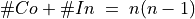
. Hence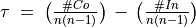
. In case #In is zero,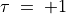
(all pairs are equivalently oriented); inversely, in case #Co is zero,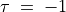
(all pairs are differently oriented).Noticing that
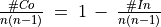
, and recalling that the bipolar-valued negation is operated by changing the sign of the characteristic value, Kendall’s original tau definition implemented in fact the bipolar-valued negation of the non equivalence of two linear orders: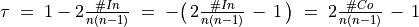
i.e. the normalized majority margin of equivalently oriented irreflexive pairs.
Let R1 and R2 be two random crisp relations defined on a same set of 5 alternatives. We may compute Kendall’s tau index as follows.
1 2 3 4 5 6 7 8 9 10 11 12 13 14 15 16 | >>> from digraphs import *
>>> R1 = RandomDigraph(order=5,Bipolar=True)
>>> R2 = RandomDigraph(order=5,Bipolar=True)
>>> E = EquivalenceDigraph(R1,R2)
>>> E.showRelationTable(ReflexiveTerms=False)
* ---- Relation Table -----
r(<=>)| 'a1' 'a2' 'a3' 'a4' 'a5'
------|-------------------------------------------
'a1' | - -1.00 1.00 -1.00 1.00
'a2' | -1.00 - -1.00 1.00 -1.00
'a3' | -1.00 -1.00 - 1.00 1.00
'a4' | -1.00 1.00 -1.00 - 1.00
'a5' | -1.00 1.00 -1.00 1.00 -
Valuation domain: [-1.00;1.00]
>>> E.correlation
{'correlation': -0.1, 'determination': 1.0}
|
In the table of the equivalence relation
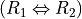
above (see Listing 67 Lines 9-13), we observe that the normalized majority margin of equivalent versus non equivalent irreflexive pairs amounts to (9 - 11)/20 = -0.1, i.e. the value of Kendall’s tau index in this plainly determined crisp case (see Listing 67 Line 16).What happens now with more or less determined and even partially indeterminate relations ? May we proceed in a similar way ?
Bipolar-valued relational equivalence¶
Let us now consider two randomly bipolar-valued digraphs R1 and R2 of order five.
1 2 3 4 5 6 7 8 9 10 11 12 13 14 15 16 17 18 19 20 21 22 | >>> R1 = RandomValuationDigraph(order=5,seed=1)
>>> R1.showRelationTable(ReflexiveTerms=False)
* ---- Relation Table -----
r(R1)| 'a1' 'a2' 'a3' 'a4' 'a5'
------|-------------------------------------------
'a1' | - -0.66 0.44 0.94 -0.84
'a2' | -0.36 - -0.70 0.26 0.94
'a3' | 0.14 0.20 - 0.66 -0.04
'a4' | -0.48 -0.76 0.24 - -0.94
'a5' | -0.02 0.10 0.54 0.94 -
Valuation domain: [-1.00;1.00]
>>> R2 = RandomValuationDigraph(order=5,seed=2)
>>> R2.showRelationTable(ReflexiveTerms=False)
* ---- Relation Table -----
r(R2)| 'a1' 'a2' 'a3' 'a4' 'a5'
------|-------------------------------------------
'a1' | - -0.86 -0.78 -0.80 -0.08
'a2' | -0.58 - 0.88 0.70 -0.22
'a3' | -0.36 0.54 - -0.46 0.54
'a4' | -0.92 0.48 0.74 - -0.60
'a5' | 0.10 0.62 0.00 0.84 -
Valuation domain: [-1.00;1.00]
|
We may notice in the relation tables shown above that 9 pairs, like (a1,a2) or (a3,a2) for instance, appear equivalently oriented (see Listing 68 Lines 6 and 17). The digraphs.EquivalenceDigraph class implements this relational equivalence relation between digraphs R1 and R2 (see Listing 69).
1 2 3 4 5 6 7 8 9 10 11 | >>> eq = EquivalenceDigraph(R1,R2)
>>> eq.showRelationTable(ReflexiveTerms=False)
* ---- Relation Table -----
r(<=>)| 'a1' 'a2' 'a3' 'a4' 'a5'
------|-------------------------------------------
'a1' | - 0.66 -0.44 -0.80 0.08
'a2' | 0.36 - -0.70 0.26 -0.22
'a3' | -0.14 0.20 - -0.46 -0.04
'a4' | 0.48 -0.48 0.24 - 0.60
'a5' | -0.02 0.10 0.00 0.84 -
Valuation domain: [-1.00;1.00]
|
In our bipolar-valued epistemic logic, logical disjunctions and conjunctions are implemented as max, respectively min operators. Notice also that the logical equivalence corresponds to a double implication
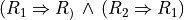
and that the implication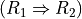
is logically equivalent to the disjunction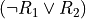
.If
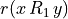
and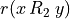
denote the bipolar-valued characteristic values of relation R1, resp. R2, we may hence compute as follows a majority margin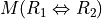
between equivalently and not equivalently oriented irreflexive pairs (x,y).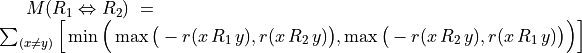
is thus given by the sum of the non reflexive terms of the relation table of eq, the relation equivalence digraph computed above (see Listing 69).
In the crisp case, is now normalized with the maximum number of possible irreflexive pairs, namely n(n-1). In a generalized r-valued case, the maximal possible equivalence majority margin M corresponds to the sum D of the conjoint determinations of
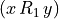
and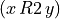
(see [BIS-2012p]).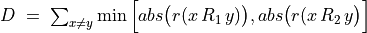
Thus, we obtain in the general r -valued case:
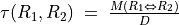
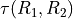
corresponds thus to a classical ordinal correlation index, but restricted to the conjointly determined parts of the given relations R1 and R2. In the limit case of two crisp linear orders, D equals n(n-1), i.e. the number of irreflexive pairs, and we recover hence Kendall ‘s original tau index definition.It is worthwhile noticing that the ordinal correlation index we obtain above corresponds to the ratio of
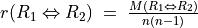
: The normalized majority margin of the pairwise relational equivalence statements, also called valued ordinal correlation, and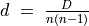
: The normalized determination of the corresponding pairwise relational equivalence statements, in fact the determinateness of the relational equivalence digraph.
We have thus successfully out-factored the determination effect from the correlation effect. With completely determined relations,
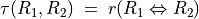
. By convention, we set the ordinal correlation with a completely indeterminate relation, i.e. when D = 0, to the indeterminate correlation value 0.0. With uniformly chosen random r-valued relations, the expected tau index is 0.0, denoting in fact an indeterminate correlation. The corresponding expected normalized determination d is about 0.333 (see [BIS-2012p]).We may verify these relations with help of the corresponding equivalence digraph eq (see Listing 70).
1 2 3 4 5 6 7 8 9 | >>> eq = EquivalenceDigraph(R1,R2)
>>> M = Decimal('0'); D = Decimal('0')
>>> n2 = eq.order*(eq.order - 1)
>>> for x in eq.actions:
for y in eq.actions:
M += eq.relation[x][y]
D += abs(eq.relation[x][y])
>>> print('r(R1<=>R2) = %+.3f, d = %.3f, tau = %+.3f' % (M/n2,D/n2,M/D))
r(R1<=>R2) = +0.026, d = 0.356, tau = +0.073
|
In general we simply use the digraphs.Digraph.computeOrdinalCorrelation() method which renders a dictionary with a ‘correlation’ (tau) and a ‘determination’ (d) attribute. We may recover r(<=>) by multiplying tau with d (see Listing 71 Line 4).
1 2 3 4 5 6 | >>> corrR1R2 = R1.computeOrdinalCorrelation(R2)
>>> tau = corrR1R2['correlation']
>>> d = corrR1R2['determination']
>>> r = tau * d
>>> print('tau(R1,R2) = %+.3f, d = %.3f, r(R1<=>R2) = %+.3f' % (tau, d, r))
tau(R1,R2) = +0.073, d = 0.356, r(R1<=>R2) = +0.026
|
We provide for convenience a direct digraphs.showCorrelation() method:
>>> corrR1R2 = R1.computeOrdinalCorrelation(R2)
>>> R1.showCorrelation(corrR1R2)
Correlation indexes:
Extended Kendall tau : +0.073
Epistemic determination : 0.356
Bipolar-valued equivalence : +0.026
We may now illustrate the quality of the global ranking of the movies shown with the heat map in Fig. 72.
Fitness of ranking heuristics¶
We reconsider the bipolar-valued outranking digraph g modelling the pairwise global ‘at least as well rated as’ relation among the 25 movies seen above (see Listing 72).
1 2 3 4 5 6 7 8 9 10 11 12 13 | >>> g = BipolarOutrankingDigraph(t,Normalized=True)
*------- Object instance description ------*
Instance class : BipolarOutrankingDigraph
Instance name : rel_grafittiPerfTab.xml
# Actions : 25
# Criteria : 15
Size : 390
Determinateness : 65%
Valuation domain : {'min': Decimal('-1.0'),
'med': Decimal('0.0'),
'max': Decimal('1.0'),}
>>> g.computeCoSize()
188
|
Out of the 25 x 24 = 600 irreflexive movie pairs, digraph g contains 390 positively validated, 188 positively invalidated outranking situations, and 22 indeterminate outranking situations (see the zero-valued cells in Fig. 74).
Let us now compute the normalized majority margin r(<=>) of the equivalence between the marginal critic’s pairwise ratings and the global Net-Flows ranking shown in the ordered heat map (see Fig. 72).
1 2 3 4 5 6 7 8 9 10 11 12 13 14 15 16 17 18 19 20 21 22 23 24 25 26 | >>> from linearOrders import NetFlowsOrder
>>> nf = NetFlowsOrder(g)
>>> nf.netFlowsRanking
['mv_QS', 'mv_RR', 'mv_DG', 'mv_NP', 'mv_HN', 'mv_HS', 'mv_SM',
'mv_JB', 'mv_PE', 'mv_FC', 'mv_TP', 'mv_CM', 'mv_DF', 'mv_TM',
'mv_DJ', 'mv_AL', 'mv_RG', 'mv_MB', 'mv_GH', 'mv_HP', 'mv_BI',
'mv_DI', 'mv_FF', 'mv_GG', 'mv_TF']
>>> for i,item in enumerate(\
g.computeMarginalVersusGlobalRankingCorrelations(\
nf.netFlowsRanking,ValuedCorrelation=True)):
print('r(%s<=>nf) = %+.3f' % (item[1],item[0]) )
r(JH<=>nf) = +0.500
r(JPT<=>nf) = +0.430
r(AP<=>nf) = +0.323
r(DR<=>nf) = +0.263
r(MR<=>nf) = +0.247
r(VT<=>nf) = +0.227
r(GS<=>nf) = +0.160
r(CS<=>nf) = +0.140
r(SJ<=>nf) = +0.137
r(RR<=>nf) = +0.133
r(TD<=>nf) = +0.110
r(CF<=>nf) = +0.110
r(SF<=>nf) = +0.103
r(AS<=>nf) = +0.080
r(FG<=>nf) = +0.027
|
In Listing 73 (see Lines 12-26), we recover above the relational equivalence characteristic values shown in the third row of the table in Fig. 72. The global Net-Flows ranking represents obviously a rather balanced compromise with respect to all movie critics’ opinions as there appears no valued negative correlation with anyone of them. The Net-Flows ranking apparently takes also correctly in account that the journalist JH, a locally renowned movie critic, shows a higher significance weight (see Line 12).
The ordinal correlation between the global Net-Flows ranking and the digraph g may be furthermore computed as follows:
1 2 3 4 5 6 | >>> corrgnf = g.computeOrdinalCorrelatin(nf)
>>> g.showCorrelation(corrgnf)
Correlation indexes:
Extended Kendall tau : +0.780
Epistemic determination : 0.300
Bipolar-valued equivalence : +0.234
|
We notice in Listing 74 Line 6 that the ordinal correlation tau(g,nf) index between the Net-Flows ranking nf and the determined part of the outranking digraph g is quite high (+0.78). Due to the rather high number of missing data, the r -valued relational equivalence between the nf and the g digraph, with a characteristics value of only +0.234, may be misleading. Yet, +0.234 still corresponds to an epistemic majority support of nearly 62% of the movie critics’ rating opinions.
It would be interesting to compare similarly the correlations one may obtain with other global ranking heuristics, like the Copeland or the Kohler ranking rule.
Illustrating preference divergences¶
The valued relational equivalence index gives us a further measure for studying how divergent appear the rating opinions expressed by the movie critics.

It is remarkable to notice in the criteria correlation matrix (see Fig. 76) that, due to the quite numerous missing data, all pairwise valued ordinal correlation indexes r(x<=>y) appear to be of low value, except the diagonal ones. These reflexive indexes r(x<=>x) would trivially all amount to +1.0 in a plainly determined case. Here they indicate a reflexive normalized determination score d, i.e. the proportion of pairs of movies each critic did evaluate. Critic JPT (the editor of the Graffiti magazine), for instance, evaluated all but one (d = 24*23/600 = 0.92), whereas critic FG evaluated only 10 movies among the 25 in discussion (d = 10*9/600 = 0.15).
To get a picture of the actual divergence of rating opinions concerning jointly seen pairs of movies, we may develop a Principal Component Analysis (2) of the corresponding tau correlation matrix. The 3D plot of the first 3 principal axes is shown in Fig. 77.
>>> g.export3DplotOfCriteriaCorrelation(ValuedCorrelation=False)

Fig. 77 3D PCA plot of the criteria ordinal correlation matrix¶
The first 3 principal axes support together about 70% of the total inertia. Most eccentric and opposed in their respective rating opinions appear, on the first principal axis with 27.2% inertia, the conservative daily press against labour and public press. On the second principal axis with 23.7.7% inertia, it is the people press versus the cultural critical press. And, on the third axis with still 19.3% inertia, the written media appear most opposed to the radio media.
Exploring the better rated and the as well as rated opinions¶
In order to furthermore study the quality of a ranking result, it may be interesting to have a separate view on the asymmetric and symmetric parts of the ‘at least as well rated as’ opinions (see the tutorial on Manipulating Digraph objects).
Let us first have a look at the pairwise asymmetric part, namely the ‘better rated than’ and ‘less well rated than’ opinions of the movie critics.
>>> ag = AsymmetricPartialDigraph(g)
>>> ag.showHTMLRelationTable(actionsList=g.computeNetFlowsRanking(),ndigits=0)

We notice here that the Net-Flows ranking rule inverts in fact just three ‘less well ranked than’ opinions and four ‘better ranked than’ ones. A similar look at the symmetric part, the pairwise ‘as well rated as’ opinions, suggests a preordered preference structure in several equivalently rated classes.
>>> sg = SymmetricPartialDigraph(g)
>>> sg.showHTMLRelationTable(actionsList=g.computeNetFlowsRanking(),ndigits=0)

Such a preordering of the movies may, for instance, be computed with the digraphs.Digraph.computeRankingByChoosing() method, where we iteratively extract dominant kernels -best remaining choices- and absorbent kernels -worst remaining choices- (see the tutorial on Computing Digraph Kernels). We operate therefore on the asymmetric ‘better rated than’, i.e. the codual (3) of the ‘at least as well rated as’ opinions (see Listing 75 Line 2).
1 2 3 4 5 6 7 8 9 10 11 12 13 | >>> from transitiveDigraphs import RankingByChoosingDigraph
>>> rbc = RankingByChoosingDigraph(g,CoDual=True)
>>> rbc.showRankingByChoosing()
Ranking by Choosing and Rejecting
1st Best Choice ['mv_QS']
2nd Best Choice ['mv_DG', 'mv_FC', 'mv_HN', 'mv_HS', 'mv_NP',
'mv_PE', 'mv_RR', 'mv_SM']
3rd Best Choice ['mv_CM', 'mv_JB', 'mv_TM']
4th Best Choice ['mv_AL', 'mv_TP']
4th Worst Choice ['mv_AL', 'mv_TP']
3rd Worst Choice ['mv_GH', 'mv_MB', 'mv_RG']
2nd Worst Choice ['mv_DF', 'mv_DJ', 'mv_FF', 'mv_GG']
1st Worst Choice ['mv_BI', 'mv_DI', 'mv_HP', 'mv_TF']
|
In the tutorial on Computing Digraph Kernels, we thouroughly discuss the computation of kernels in bipolar-valued digraphs. Yet, we do not tackle there the problem of computing the corresponding bipolar-valued kernel membership characteristic vectors. This is the topic for the next pearl of bipolar-valued epistemic logic.
Back to Content Table
Bipolar-valued kernel membership characteristic vectors¶
Claude Berge’s kernel equation systems¶
Let G(X,R) be a crisp irreflexive digraph defined on a finite set X of nodes and where R is the corresponding {-1,+1}-valued adjacency matrix. Let Y be the {-1,+1}-valued membership characteristic (row) vector of a choice in X. When Y satisfies the following equation system

where for all x in X,

then Y characterises an initial kernel ([BER-1958p]).
When transposing now the membership characteristic vector Y into a column vector  , the following equation system
, the following equation system

makes similarly characterise a terminal kernel.
Let us verify this result on a tiny random digraph.
1 2 3 4 5 6 7 8 9 10 11 12 13 14 15 16 17 18 19 20 21 22 | >>> from digraphs import *
>>> g = RandomDigraph(order=3,seed=1)
* ---- Relation Table -----
R | 'a1' 'a2' 'a3'
------|---------------------
'a1' | -1 +1 -1
'a2' | -1 -1 +1
'a3' | +1 +1 -1
>>> g.showPreKernels()
*--- Computing preKernels ---*
Dominant preKernels :
['a3']
independence : 1.0
dominance : 1.0
absorbency : -1.0
covering : 1.000
Absorbent preKernels :
['a2']
independence : 1.0
dominance : -1.0
absorbency : 1.0
covered : 1.000
|
It is easy to verify that the characteristic vector [-1, -1, +1] satisfies the initial kernel equation system; a3 gives an initial kernel. Similarly, the characteristic vector [-1, +1, -1] verifies indeed the terminal kernel equation system and hence a2 gives a terminal kernel.
We succeeded now in generalizing Berge’s kernel equation systems to genuine bipolar-valued digraphs ([BIS-2006_1p]). The constructive proof, found by M. Pirlot, is based on the following fixpoint equation that may be used for computing bipolar-valued kernel membership vectors,

Solving bipolar-valued kernel equation systems¶
John von Neumann showed indeed that, when a digraph G(X,R) is acyclic with a unique initial kernel K characterised by its membership characteristics vector Yk, then the following double bipolar-valued fixpoint equation

will admit a stable high and a stable low fixpoint solution that converge both to Yk ([SCH-1985p]).
Inspired by this crisp double fixpoint equation, we observed that for a given bipolar-valued digraph G(X,R), each of its dominant or absorbent prekernels Ki in X determines an induced partial graph G(X,R/Ki) which is acyclyc and admits Ki as unique kernel (see [BIS-2006_2p]).
Following the von Neumann fixpoint algorithm, a similar bipolar-valued extended double fixpoint algorithm, applied to G(X,R/Ki), allows to compute hence the associated bipolar-valued kernel characteristic vectors Yi in polynomial complexity.
Algorithm
in : bipolar-valued digraph G(X,R),out : set {Y1, Y2, .. } of bipolar-valued kernel membership characteristic vectors.
enumerate all initial and terminal crisp prekernels K, K2, … in the given bipolar-valued digraph (see the tutorial on Computing Digraph Kernels);
for each crisp initial kernel Ki:
construct a partially determined subgraph G(X,R/Ki) supporting exactly this unique initial kernel Ki;
Use the double fixpoint equation T2 with the partially determined adjacency matrix R/Ki for computing a stable low and a stable high fixpoint;
Determine the bipolar-valued Ki-membership characteristic vector Yi with an epistemic disjunction of the previous low and high fixpoints;
repeat step (2) for each terminal kernel Kj by using the double fixpoint equation T2 with the transpose of the adjacency matrix R/Kj.
Time for a practical illustration.
1 2 3 4 5 6 7 8 9 10 11 12 13 14 | >>> from outrankingDigraphs import *
>>> g = RandomBipolarOutrankingDigraph(Normalized=True,seed=5)
>>> print(g)
*------- Object instance description ------*
Instance class : RandomBipolarOutrankingDigraph
Instance name : rel_randomperftab
# Actions : 7
# Criteria : 7
Size : 26
Determinateness (%) : 67.14
Valuation domain : [-1.0;1.0]
Attributes : ['name', 'actions', 'criteria', 'evaluation',
'relation', 'valuationdomain', 'order',
'gamma', 'notGamma']
|
The random outranking digraph g, we consider here in Listing 76 for illustration, models the pairwise outranking situations between seven decision alternatives evaluated on seven incommensurable performance criteria. We compute its corresponding bipolar-valued prekernels on the associated codual digraph gcd.
1 2 3 4 5 6 7 8 9 10 11 12 13 14 15 16 17 18 19 20 21 22 23 24 25 26 | >>> gcd = ~(-g) # strict outranking digraph
>>> gcd
>>> gcd.showPreKernels()
*--- Computing prekernels ---*
Dominant prekernels :
['a1', 'a4', 'a2']
independence : +0.000
dominance : +0.070
absorbency : -0.488
covering : +0.667
Absorbent prekernels :
['a7', 'a3']
independence : +0.000
dominance : -0.744
absorbency : +0.163
covered : +0.800
*----- statistics -----
graph name: converse-dual_rel_randomperftab
number of solutions
dominant kernels : 1
absorbent kernels: 1
cardinality frequency distributions
cardinality : [0, 1, 2, 3, 4, 5, 6, 7]
dominant kernel : [0, 0, 0, 1, 0, 0, 0, 0]
absorbent kernel: [0, 0, 1, 0, 0, 0, 0, 0]
Execution time : 0.00022 sec.
|
The codual outranking digraph, modelling a strict outranking relation, admits an initial prekernel [a1, a2, a4] and a terminal one [a3, a7] (see Listing 77 Line 7 and 13).
Let us compute the initial prekernel restricted adjacency table with the digraphs.Digraph.domkernelrestrict() method.
1 2 3 4 5 | >>> k1Relation = gcd.domkernelrestrict(['a1','a2','a4'])
>>> gcd.showHTMLRelationTable(
actionsList=['a1','a2','a4','a3','a5','a6','a7'],
relation=k1Relation,
tableTitle='K1 restricted adjacency table')
|

Fig. 78 Initial kernel [a1, a2, a4] restricted adjacency table¶
We first notice that this initial prekernel is indeed only weakly independent: The outranking situation between a4 and a1 appears indeterminate. The corresponding initial prekernel membership characteristic vector may be computed with the digraphs.Digraph.computeKernelVector() method.
1 2 3 4 5 6 7 8 9 10 11 12 13 14 15 16 17 18 19 20 21 22 | >>> gcd.computeKernelVector(['a1','a2','a4'],Initial=True,Comments=True)
--> Initial prekernel: {'a1', 'a2', 'a4'}
initial low vector : [-1.00, -1.00, -1.00, -1.00, -1.00, -1.00, -1.00]
initial high vector: [+1.00, +1.00, +1.00, +1.00, +1.00, +1.00, +1.00]
1st low vector : [ 0.00, +0.21, -0.21, 0.00, -0.44, -0.07, -0.58]
1st high vector : [+1.00, +1.00, +1.00, +1.00, +1.00, +1.00, +1.00]
2nd low vector : [ 0.00, +0.21, -0.21, 0.00, -0.44, -0.07, -0.58]
2nd high vector : [ 0.00, +0.21, -0.21, +0.21, -0.21, -0.05, -0.21]
3rd low vector : [ 0.00, +0.21, -0.21, +0.21, -0.21, -0.07, -0.21]
3rd high vector : [ 0.00, +0.21, -0.21, +0.21, -0.21, -0.05, -0.21]
4th low vector : [ 0.00, +0.21, -0.21, +0.21, -0.21, -0.07, -0.21]
4th high vector : [ 0.00, +0.21, -0.21, +0.21, -0.21, -0.07, -0.21]
# iterations : 4
low & high fusion : [ 0.00, +0.21, -0.21, +0.21, -0.21, -0.07, -0.21]
Choice vector for initial prekernel: {'a1', 'a2', 'a4'}
a2: +0.21
a4: +0.21
a1: 0.00
a6: -0.07
a3: -0.21
a5: -0.21
a7: -0.21
|
We start the fixpoint computation with an empty set characterisation as first low vector and a complete set X characterising high vector. After each iteration, the low vector is set to the negation of the previous high vector and the high vector is set to the negation of the previous low vector.
A unique stable prekernel characteristic vector Y1 is here attained at the fourth iteration with positive members a2: +0.21 and a4: +0.21 (60.5% criteria significance majority); a1: 0.00 being an ambiguous potential member. Alternatives a3, a5, a6 and a7 are all negative members, i.e. positive non members of this outranking prekernel.
Let us now compute the restricted adjacency table for the outranked, i.e. the terminal prekernel [a3, a7].
1 2 3 4 5 | >>> k2Relation = gcd.abskernelrestrict(['a3','a7'])
>>> gcd.showHTMLRelationTable(
actionsList=['a3','a7','a1','a2','a4','a5','a6'],
relation=k2Relation,
tableTitle='K2 restricted adjacency table')
|

Fig. 79 Terminal kernel [‘a3’,’a7’] restricted adjacency table¶
Again, we notice that this terminal prekernel is indeed only weakly independent. The corresponding bipolar-valued characteristic vector Y2 may be computed as follows.
1 2 3 4 5 6 7 8 9 10 11 12 13 14 15 16 17 18 19 20 | >>> gcd.computeKernelVector(['a3','a7'],Initial=False,Comments=True)
--> Terminal prekernel: {'a3', 'a7'}
initial low vector : [-1.00, -1.00, -1.00, -1.00, -1.00, -1.00, -1.00]
initial high vector : [+1.00, +1.00, +1.00, +1.00, +1.00, +1.00, +1.00]
1st low vector : [-0.16, -0.49, 0.00, -0.58, -0.16, -0.30, +0.49]
1st high vector : [+1.00, +1.00, +1.00, +1.00, +1.00, +1.00, +1.00]
2nd low vector : [-0.16, -0.49, 0.00, -0.58, -0.16, -0.30, +0.49]
2nd high vector : [-0.16, -0.49, 0.00, -0.49, -0.16, -0.26, +0.49]
3rd low vector : [-0.16, -0.49, 0.00, -0.49, -0.16, -0.26, +0.49]
3rd high vector : [-0.16, -0.49, 0.00, -0.49, -0.16, -0.26, +0.49]
# iterations : 3
high & low fusion : [-0.16, -0.49, 0.00, -0.49, -0.16, -0.26, +0.49]
Choice vector for terminal prekernel: {'a3', 'a7'}
a7: +0.49
a3: 0.00
a1: -0.16
a5: -0.16
a6: -0.26
a2: -0.49
a4: -0.49
|
A unique stable bipolar-valued high and low fixpoint is attained at the third iteration with a7 positively confirmed (about 75% criteria significance majority) as member of this terminal prekernel, whereas the membership of a3 in this prekernel appears indeterminate. All the remaining nodes have negative membership characteristic values and are hence positively excluded from this prekernel.
When we reconsider the graphviz drawing of this outranking digraph (see Fig. 52 in the tutorial on Computing Digraph Kernels),

Fig. 80 The strict outranking digraph oriented by the positive members of its initial and terminal prekernels¶
it becomes obvious why alternative a1 is neither included nor excluded from the initial prekernel. Same observation is applicable to alternative a3 which can neither be included nor excluded from the terminal prekernel. It may even happen, in case of more indeterminate outranking situations, that no alternative is positively included or excluded from a weakly independent prekernel; the corresponding bipolar-valued membership characteristic vector being completely indeterminate (see for instance the tutorial on Computing a Best Choice Recommendation).
To illustrate finally why sometimes we need to operate an epistemic disjunctive fusion of unequal stable low and high membership characteristics vectors (see Step 2.c.), let us consider, for instance, the following crisp 7-cycle graph.
1 2 3 4 5 6 7 8 9 10 11 12 | >>> g = CirculantDigraph(order=7,circulants=[-1,1])
>>> g
*------- Digraph instance description ------*
Instance class : CirculantDigraph
Instance name : c7
Digraph Order : 7
Digraph Size : 14
Valuation domain : [-1.00;1.00]
Determinateness (%) : 100.00
Attributes : ['name', 'order', 'circulants', 'actions',
'valuationdomain', 'relation',
'gamma', 'notGamma']
|
Digraph c7 is a symmetric crisp digraph showing, among others, the maximal independent set {‘2’,’5’,’7’}, i.e. an initial as well as terminal kernel. We may compute the corresponding initial kernel characteristic vector.
1 2 3 4 5 6 7 8 9 10 11 12 13 14 15 16 17 18 19 20 | >>> g.computeKernelVector(['2','5','7'],Initial=True,Comments=True)
--> Initial kernel: {'2', '5', '7'}
initial low vector : [-1.0, -1.0, -1.0, -1.0, -1.0, -1.0, -1.0]
initial high vector : [+1.0, +1.0, +1.0, +1.0, +1.0, +1.0, +1.0]
1 st low vector : [-1.0, 0.0, -1.0, -1.0, 0.0, -1.0, 0.0]
1 st high vector : [+1.0, +1.0, +1.0, +1.0, +1.0, +1.0, +1.0]
2 nd low vector : [-1.0, 0.0, -1.0, -1.0, 0.0, -1.0, 0.0]
2 nd high vector : [ 0.0, +1.0, 0.0, 0.0, +1.0, 0.0, +1.0]
stable low vector : [-1.0, 0.0, -1.0, -1.0, 0.0, -1.0, 0.0]
stable high vector : [ 0.0, +1.0, 0.0, 0.0, +1.0, 0.0, +1.0]
#iterations : 3
low & high fusion : [-1.0, +1.0, -1.0, -1.0, +1.0, -1.0, +1.0]
Choice vector for initial prekernel: {'2', '5', '7'}
7: +1.00
5: +1.00
2: +1.00
6: -1.00
4: -1.00
3: -1.00
1: -1.00
|
Notice that the stable low vector characterises the negative membership part, whereas, the stable high vector characterises the positive membership part (see Lines 9-10 above). The bipolar disjunctive fusion assembles eventually both stable parts into the correct prekernel characteristic vector (Line 12).
The adjacency matrix of a symmetric digraph staying unchanged by the transposition operator, the previous computations, when qualifying the same kernel as a terminal instance, will hence produce exactly the same result.
Note
It is worthwhile noticing again the essential computational role, the logical indeterminate value 0.0 is playing in this double fixpoint algorithm. To implement such kind of algorithms without a logical neutral term would be like implementing numerical algorithms without a possible usage of the number 0. Infinitely many trivial impossibility theorems and dubious logical results come up.
Back to Content Table
On confident outrankings with uncertain criteria significances¶
When modelling preferences following the outranking approach, the signs of the majority margins do sharply distribute validation and invalidation of pairwise outranking situations. How can we be confident in the resulting outranking digraph, when we acknowledge the usual imprecise knowledge of criteria significance weights coupled with small majority margins?
To answer this question, one usually requires qualified majority margins for confirming outranking situations. But how to choose such a qualifying majority level: two third, three fourth of the significances ?
In this tutorial we propose to link the qualifying significance majority with a required alpha%-confidence level. We model therefore the significance weights as random variables following more or less widespread distributions around an average significance value that corresponds to the given deterministic weight. As the bipolar-valued random credibility of an outranking statement hence results from the simple sum of positive or negative independent random variables, we may apply the Central Limit Theorem (CLT) for computing the bipolar likelihood that the expected majority margin will indeed be positive, respectively negative.
Modelling uncertain criteria significances¶
Let us consider the significance weights of a family F of m criteria to be independent random variables Wj, distributing the potential significance weights of each criterion j = 1, …, m around a mean value E(Wj) with variance V(Wj).
Choosing a specific stochastic model of uncertainty is usually application specific. In the limited scope of this tutorial, we will illustrate the consequence of this design decision on the resulting outranking modelling with four slightly different models for taking into account the uncertainty with which we know the numerical significance weights: uniform, triangular, and two models of Beta laws, one more widespread and, the other, more concentrated.
When considering, for instance, that the potential range of a significance weight is distributed between 0 and two times its mean value, we obtain the following random variates:
A continuous uniform distribution on the range 0 to 2E(Wj). Thus Wj ~ U(0, 2E(Wj)) and V(Wj) = 1/3(E(Wj))^2;
A symmetric beta distribution with, for instance, parameters alpha = 2 and beta = 2. Thus, Wi ~ Beta(2,2) * 2E(Wj) and V(Wj) = 1/5(E(Wj))^2.
A symmetric triangular distribution on the same range with mode E(Wj). Thus Wj ~ Tr(0, 2E(Wj), E(Wj)) with V(Wj) = 1/6(E(Wj))^2;
A narrower beta distribution with for instance parameters alpha = 4 and beta = 4. Thus Wj ~ Beta(4,4) * 2E(Wj) , V(Wj) = 1/9(E(Wj))^2.

Fig. 81 Four models of uncertain significance weights¶
It is worthwhile noticing that these four uncertainty models all admit the same expected value, E(Wj), however, with a respective variance which goes decreasing from 1/3, to 1/9 of the square of E(W) (see Fig. 81).
Bipolar-valued likelihood of ‘’at least as good as ” situations¶
Let A = {x, y, z,…} be a finite set of n potential decision actions, evaluated on F = {1,…, m}, a finite and coherent family of m performance criteria. On each criterion j in F, the decision actions are evaluated on a real performance scale [0; Mj ], supporting an upper-closed indifference threshold indj and a lower-closed preference threshold prj such that 0 <= indj < prj <= Mj. The marginal performance of object x on criterion j is denoted xj. Each criterion j is thus characterising a marginal double threshold order  on A (see Fig. 82):
on A (see Fig. 82):

- Semantics of the marginal bipolar-valued characteristic function:
+1 signifies x is performing at least as good as y on criterion j,
-1 signifies that x is not performing at least as good as y on criterion j,
0 signifies that it is unclear whether, on criterion j, x is performing at least as good as y.

Fig. 82 Bipolar-valued outranking characteristic function¶
Each criterion j in F contributes the random significance Wj of his ‘at least as good as’ characteristic  to the global characteristic
to the global characteristic  in the following way:
in the following way:

Thus, becomes a simple sum of positive or negative independent random variables with known means and variances where  signifies x is globally performing at least as good as y,
signifies x is globally performing at least as good as y,  signifies that x is not globally performing at least as good as y, and
signifies that x is not globally performing at least as good as y, and  signifies that it is unclear whether x is globally performing at least as good as y.
signifies that it is unclear whether x is globally performing at least as good as y.
From the Central Limit Theorem (CLT), we know that such a sum of random variables leads, with m getting large, to a Gaussian distribution Y with
 and
and
 .
.
And the likelihood of validation, respectively invalidation of an ‘at least as good as’ situation, denoted  , may hence be assessed by the probability P(Y>0) = 1.0 - P(Y<=0) that Y takes a positive, resp. P(Y<0) takes a negative value. In the bipolar-valued case here, we can judiciously make usage of the standard Gaussian error function , i.e. the bipolar 2P(Z) - 1.0 version of the standard Gaussian P(Z) probability distribution function:
, may hence be assessed by the probability P(Y>0) = 1.0 - P(Y<=0) that Y takes a positive, resp. P(Y<0) takes a negative value. In the bipolar-valued case here, we can judiciously make usage of the standard Gaussian error function , i.e. the bipolar 2P(Z) - 1.0 version of the standard Gaussian P(Z) probability distribution function:

The range of the bipolar-valued hence becomes [-1.0;+1.0], and  , i.e. a negative likelihood represents the likelihood of the correspondent negated ‘at least as good as’ situation. A likelihood of +1.0 (resp. -1.0) means the corresponding preferential situation appears certainly validated (resp. invalidated).
, i.e. a negative likelihood represents the likelihood of the correspondent negated ‘at least as good as’ situation. A likelihood of +1.0 (resp. -1.0) means the corresponding preferential situation appears certainly validated (resp. invalidated).
Example
Let x and y be evaluated wrt 7 equisignificant criteria; Four criteria positively support that x is as least as good performing than y and three criteria support that x is not at least as good performing than y. Suppose E(Wj) = w for j = 1,…,7 and Wj ~ Tr(0, 2w, w) for j = 1,…7. The expected value of the global ‘at least as good as’ characteristic value becomes:  with a variance
with a variance  .
.
If w = 1,  and
and  . By the CLT, the bipolar likelihood of the at least as good performing situation becomes:
. By the CLT, the bipolar likelihood of the at least as good performing situation becomes:  , which corresponds to a global support of (0.66 + 1.0)/2 = 83% of the criteria significance weights.
, which corresponds to a global support of (0.66 + 1.0)/2 = 83% of the criteria significance weights.
A Monte Carlo simulation with 10 000 runs empirically confirms the effective convergence to a Gaussian (see Fig. 83 realised with gretl 4 ).

Fig. 83 Distribution of 10 000 random outranking characteristic values¶
Indeed,  , with an empirical probability of observing a negative majority margin of about 17%.
, with an empirical probability of observing a negative majority margin of about 17%.
Confidence level of outranking situations¶
Now, following the classical outranking approach (see [BIS-2013p] ), we may say, from an epistemic perspective, that decision action x outranks decision action y at confidence level alpha %, if
an expected majority of criteria validates, at confidence level alpha % or higher, a global ‘at least as good as’ situation between x and y, and
no considerably less performing is observed on a discordant criterion.
Dually, decision action x does not outrank decision action y at confidence level alpha %, if
an expected majority of criteria at confidence level alpha % or higher, invalidates a global ‘at least as good as’ situation between x and y, and
no considerably better performing situation is observed on a concordant criterion.
Time for a coded example
Let us consider the following random performance tableau.
1 2 3 4 5 6 7 8 9 10 11 12 13 | >>> from outrankingDigraphs import *
>>> t = RandomPerformanceTableau(numberOfActions=7,numberOfCriteria=7,seed=100)
>>> t.showPerformanceTableau(Transposed=True)
*---- performance tableau -----*
criteria | weights | 'a1' 'a2' 'a3' 'a4' 'a5' 'a6' 'a7'
---------|------------------------------------------------------------
'g1' | 1 | 15.17 44.51 57.87 58.00 24.22 29.10 96.58
'g2' | 1 | 82.29 43.90 NA 35.84 29.12 34.79 62.22
'g3' | 1 | 44.23 19.10 27.73 41.46 22.41 21.52 56.90
'g4' | 1 | 46.37 16.22 21.53 51.16 77.01 39.35 32.06
'g5' | 1 | 47.67 14.81 79.70 67.48 NA 90.72 80.16
'g6' | 1 | 69.62 45.49 22.03 33.83 31.83 NA 48.80
'g7' | 1 | 82.88 41.66 12.82 21.92 75.74 15.45 6.05
|
For the corresponding confident outranking digraph, we require a confidence level of alpha = 90%. The outrankingDigraphs.ConfidentBipolarOutrankingDigraph class provides such a construction.
1 2 3 4 5 6 7 8 9 10 11 12 13 14 15 16 17 18 | >>> g90 = ConfidentBipolarOutrankingDigraph(t,confidence=90)
>>> print(g90)
*------- Object instance description ------*
Instance class : ConfidentBipolarOutrankingDigraph
Instance name : rel_randomperftab_CLT
# Actions : 7
# Criteria : 7
Size : 15
Determinateness (%) : 62.07
Valuation domain : [-1.00;1.00]
Attributes : ['name', 'bipolarConfidenceLevel',
'distribution', 'betaParameter', 'actions',
'order', 'valuationdomain', 'criteria',
'evaluation', 'concordanceRelation',
'vetos', 'negativeVetos',
'largePerformanceDifferencesCount',
'likelihoods', 'confidenceCutLevel',
'relation', 'gamma', 'notGamma']
|
1 2 3 4 5 6 7 8 9 10 11 12 13 14 15 16 17 18 19 20 21 22 23 24 | >>> g90.showRelationTable(LikelihoodDenotation=True)
* ---- Outranking Relation Table -----
r/(lh) | 'a1' 'a2' 'a3' 'a4' 'a5' 'a6' 'a7'
-------|------------------------------------------------------------
'a1' | +0.00 +0.71 +0.29 +0.29 +0.29 +0.29 +0.00
| ( - ) (+1.00) (+0.95) (+0.95) (+0.95) (+0.95) (+0.65)
'a2' | -0.71 +0.00 -0.29 +0.00 +0.00 +0.29 -0.57
|(-1.00) ( - ) (-0.95) (-0.65) (+0.73) (+0.95) (-1.00)
'a3' | -0.29 +0.29 +0.00 -0.29 +0.00 +0.00 -0.29
|(-0.95) (+0.95) ( - ) (-0.95) (-0.73) (-0.00) (-0.95)
'a4' | +0.00 +0.00 +0.57 +0.00 +0.29 +0.57 -0.43
|(-0.00) (+0.65) (+1.00) ( - ) (+0.95) (+1.00) (-0.99)
'a5' | -0.29 +0.00 +0.00 +0.00 +0.00 +0.29 -0.29
|(-0.95) (-0.00) (+0.73) (-0.00) ( - ) (+0.99) (-0.95)
'a6' | -0.29 +0.00 +0.00 -0.29 +0.00 +0.00 +0.00
|(-0.95) (-0.00) (+0.73) (-0.95) (+0.73) ( - ) (-0.00)
'a7' | +0.00 +0.71 +0.57 +0.43 +0.29 +0.00 +0.00
|(-0.65) (+1.00) (+1.00) (+0.99) (+0.95) (-0.00) ( - )
Valuation domain : [-1.000; +1.000]
Uncertainty model : triangular(a=2.0,b=2.0)
Likelihood domain : [-1.0;+1.0]
Confidence level : 0.80 (90.0%)
Confident majority : 0.14 (57.1%)
Determinateness : 0.24 (62.1%)
|
The resulting 90% confident expected outranking relation is shown above. The (lh) figures, indicated in the table above, correspond to bipolar likelihoods and the required bipolar confidence level equals (0.90+1.0)/2 = 0.80 (see Line 22 above). Action ‘a1’ thus confidently outranks all other actions, except ‘a7’ where the actual likelihood (+0.65) is lower than the required one (0.80) and we furthermore observe a considerable counter-performance on criterion ‘g1’.
Notice also the lack of confidence in the outranking situations we observe between action ‘a2’ and actions ‘a4’ and ‘a5’. In the deterministic case we would have  and
and  . All outranking situations with a characteristic value lower or equal to abs(0.143), i.e. a majority support of 1.143/2 = 57.1% and less, appear indeed to be not confident at level 90% (see Line 23 above).
. All outranking situations with a characteristic value lower or equal to abs(0.143), i.e. a majority support of 1.143/2 = 57.1% and less, appear indeed to be not confident at level 90% (see Line 23 above).
We may draw the corresponding strict 90%-confident outranking digraph, oriented by its initial and terminal prekernels (see Fig. 84).
1 2 3 4 5 6 7 8 9 10 11 12 13 14 15 16 17 18 19 20 | >>> gcd90 = ~ (-g90)
>>> gcd90.showPreKernels()
*--- Computing preKernels ---*
Dominant preKernels :
['a1', 'a7']
independence : 0.0
dominance : 0.2857
absorbency : -0.7143
covering : 0.800
Absorbent preKernels :
['a2', 'a5', 'a6']
independence : 0.0
dominance : -0.2857
absorbency : 0.2857
covered : 0.583
>>> gcd90.exportGraphViz(fileName='confidentOutranking',
bestChoice=['a1', 'a7'],worstChoice=['a2', 'a5', 'a6'])
*---- exporting a dot file for GraphViz tools ---------*
Exporting to confidentOutranking.dot
dot -Grankdir=BT -Tpng confidentOutranking.dot -o confidentOutranking.png
|

Fig. 84 Strict 90%-confident outranking digraph oriented by its prekernels¶
Now, what becomes this 90%-confident outranking digraph when we require a stronger confidence level of, say 99% ?
1 2 3 4 5 6 7 8 9 10 11 12 13 14 15 16 17 18 19 20 21 22 23 24 25 | >>> g99 = ConfidentBipolarOutrankingDigraph(t,confidence=99)
>>> g99.showRelationTable()
* ---- Outranking Relation Table -----
r/(lh) | 'a1' 'a2' 'a3' 'a4' 'a5' 'a6' 'a7'
-------|------------------------------------------------------------
'a1' | +0.00 +0.71 +0.00 +0.00 +0.00 +0.00 +0.00
| ( - ) (+1.00) (+0.95) (+0.95) (+0.95) (+0.95) (+0.65)
'a2' | -0.71 +0.00 +0.00 +0.00 +0.00 +0.00 -0.57
| (-1.00) ( - ) (-0.95) (-0.65) (+0.73) (+0.95) (-1.00)
'a3' | +0.00 +0.00 +0.00 +0.00 +0.00 +0.00 +0.00
| (-0.95) (+0.95) ( - ) (-0.95) (-0.73) (-0.00) (-0.95)
'a4' | +0.00 +0.00 +0.57 +0.00 +0.00 +0.57 -0.43
| (-0.00) (+0.65) (+1.00) ( - ) (+0.95) (+1.00) (-0.99)
'a5' | +0.00 +0.00 +0.00 +0.00 +0.00 +0.29 +0.00
| (-0.95) (-0.00) (+0.73) (-0.00) ( - ) (+0.99) (-0.95)
'a6' | +0.00 +0.00 +0.00 +0.00 +0.00 +0.00 +0.00
| (-0.95) (-0.00) (+0.73) (-0.95) (+0.73) ( - ) (-0.00)
'a7' | +0.00 +0.71 +0.57 +0.43 +0.00 +0.00 +0.00
| (-0.65) (+1.00) (+1.00) (+0.99) (+0.95) (-0.00) ( - )
Valuation domain : [-1.000; +1.000]
Uncertainty model : triangular(a=2.0,b=2.0)
Likelihood domain : [-1.0;+1.0]
Confidence level : 0.98 (99.0%)
Confident majority : 0.29 (64.3%)
Determinateness : 0.13 (56.6%)
|
At 99% confidence, the minimal required significance majority support amounts to 64.3% (see Line 24 above). As a result, most outranking situations don’t get anymore validated, like the outranking situations between action ‘a1’ and actions ‘a3’, ‘a4’, ‘a5’ and ‘a6’ (see Line 5 above). The overall epistemic determination of the digraph consequently drops from 62.1% to 56.6% (see Line 25).
Finally, what becomes the previous 90%-confident outranking digraph if the uncertainty concerning the criteria significance weights is modelled with a larger variance, like uniform variates.
1 2 3 4 5 6 7 8 9 10 11 12 13 14 15 16 17 18 19 20 21 22 23 24 25 | >>> gu90 = ConfidentBipolarOutrankingDigraph(t,confidence=90,distribution='uniform')
>>> gu90.showRelationTable()
* ---- Outranking Relation Table -----
r/(lh) | 'a1' 'a2' 'a3' 'a4' 'a5' 'a6' 'a7'
-------|------------------------------------------------------------
'a1' | +0.00 +0.71 +0.29 +0.29 +0.29 +0.29 +0.00
| ( - ) (+1.00) (+0.84) (+0.84) (+0.84) (+0.84) (+0.49)
'a2' | -0.71 +0.00 -0.29 +0.00 +0.00 +0.29 -0.57
| (-1.00) ( - ) (-0.84) (-0.49) (+0.56) (+0.84) (-1.00)
'a3' | -0.29 +0.29 +0.00 -0.29 +0.00 +0.00 -0.29
| (-0.84) (+0.84) ( - ) (-0.84) (-0.56) (-0.00) (-0.84)
'a4' | +0.00 +0.00 +0.57 +0.00 +0.29 +0.57 -0.43
| (-0.00) (+0.49) (+1.00) ( - ) (+0.84) (+1.00) (-0.95)
'a5' | -0.29 +0.00 +0.00 +0.00 +0.00 +0.29 -0.29
| (-0.84) (-0.00) (+0.56) (-0.00) ( - ) (+0.92) (-0.84)
'a6' | -0.29 +0.00 +0.00 -0.29 +0.00 +0.00 +0.00
| (-0.84) (-0.00) (+0.56) (-0.84) (+0.56) ( - ) (-0.00)
'a7' | +0.00 +0.71 +0.57 +0.43 +0.29 +0.00 +0.00
| (-0.49) (+1.00) (+1.00) (+0.95) (+0.84) (-0.00) ( - )
Valuation domain : [-1.000; +1.000]
Uncertainty model : uniform(a=2.0,b=2.0)
Likelihood domain : [-1.0;+1.0]
Confidence level : 0.80 (90.0%)
Confident majority : 0.14 (57.1%)
Determinateness : 0.24 (62.1%)
|
Despite lower likelihood values (see the g90 relation table above), we keep the same confident majority level of 57.1% (see Line 24 above)and, hence, also the same 90%-confident outranking digraph.
For concluding, it is worthwhile noticing again that it is the neutral value of our bipolar-valued epistemic logic that allows us to easily handle alpha% confidence or not of outranking situations when confronted with uncertain criteria significances. Remarkable furthermore is the usage, the standard Gaussian error function provides by delivering signed likelihood values immediately concerning either a positive relational statement, or when negative, its negated version.
Back to Content Table
Robustness analysis of bipolar-valued outranking digraphs¶
Cardinal or ordinal criteria significances¶
The required cardinal significance weights of the performance criteria represent the Achilles’ heel of the outranking approach. Rarely will indeed a decision maker be cognitively competent for suggesting precise decimal-valued criteria significance weights. More often, the decision problem will involve more or less equally important decision objectives with more or less equi-significant criteria. A random example of such a decision problem may be generated with the randomPerfTabs.Random3ObjectivesPerformanceTableau class.
1 2 3 4 5 6 7 8 9 10 11 12 13 14 15 16 17 18 19 20 21 22 23 24 25 26 27 28 29 30 31 32 33 34 | >>> from randomPerfTabs import Random3ObjectivesPerformanceTableau
>>> t = Random3ObjectivesPerformanceTableau(numberOfActions=7,\
numberOfCriteria=9,seed=102)
>>> t
*------- PerformanceTableau instance description ------*
Instance class : Random3ObjectivesPerformanceTableau
Seed : 102
Instance name : random3ObjectivesPerfTab
# Actions : 7
# Objectives : 3
# Criteria : 9
Attributes : ['name', 'valueDigits', 'BigData', 'OrdinalScales',
'missingDataProbability', 'negativeWeightProbability',
'randomSeed', 'sumWeights', 'valuationPrecision',
'commonScale', 'objectiveSupportingTypes', 'actions',
'objectives', 'criteriaWeightMode', 'criteria',
'evaluation', 'weightPreorder']
>>> t.showObjectives()
*------ show objectives -------"
Eco: Economical aspect
ec1 criterion of objective Eco 8
ec4 criterion of objective Eco 8
ec8 criterion of objective Eco 8
Total weight: 24.00 (3 criteria)
Soc: Societal aspect
so2 criterion of objective Soc 12
so7 criterion of objective Soc 12
Total weight: 24.00 (2 criteria)
Env: Environmental aspect
en3 criterion of objective Env 6
en5 criterion of objective Env 6
en6 criterion of objective Env 6
en9 criterion of objective Env 6
Total weight: 24.00 (4 criteria)
|
In this example (see Listing 79), we face seven decision alternatives that are assessed with respect to three equally important decision objectives concerning: first, an economical aspect with a coalition of three performance criteria of significance weight 8, secondly, a societal aspect with a coalition of two performance criteria of significance weight 12, and thirdly, an environmental aspect with a coalition four performance criteria of significance weight 6.
The question we tackle is the following: How dependent on the actual values of the significance weights appears the corresponding bipolar-valued outranking digraph ? In the previous section, we assumed that the criteria significance weights were random variables. Here, we shall assume that we know for sure only the preordering of the significance weights. In our example we see indeed three increasing weight equivalence classes (Listing 80).
1 2 3 4 | >>> t.showWeightPreorder()
['en3', 'en5', 'en6', 'en9'] (6) <
['ec1', 'ec4', 'ec8'] (8) <
['so2', 'so7'] (12)
|
How stable appear now the outranking situations when assuming only ordinal significance weights?
Qualifying the stability of outranking situations¶
Let us construct the normalized bipolar-valued outranking digraph corresponding with the previous 3 Objectives performance tableau t.
1 2 3 4 5 6 7 8 9 10 11 12 13 | >>> from outrankingDigraphs import BipolarOutrankingDigraph
>>> g = BipolarOutrankingDigraph(t,Normalized=True)
>>> g.showRelationTable()
* ---- Relation Table -----
r(>=) | 'a1' 'a2' 'a3' 'a4' 'a5' 'a6' 'a7'
------|------------------------------------------------
'a1' | +1.00 -0.42 +0.00 -0.69 +0.39 +0.11 -0.06
'a2' | +0.58 +1.00 +0.83 +0.00 +0.58 +0.58 +0.58
'a3' | +0.25 -0.33 +1.00 +0.00 +0.50 +1.00 +0.25
'a4' | +0.78 +0.00 +0.61 +1.00 +1.00 +1.00 +0.67
'a5' | -0.11 -0.50 -0.25 -0.89 +1.00 +0.11 -0.14
'a6' | +0.22 -0.42 +0.00 -1.00 +0.17 +1.00 -0.11
'a7' | +0.22 -0.50 +0.17 -0.06 +0.78 +0.42 +1.00
|
We notice on the principal diagonal, the certainly validated reflexive terms +1.00 (see Listing 81 Lines 7-13). Now, we know for sure that unanimous outranking situations are completely independent of the significance weights. Similarly, all outranking situations that are supported by a majority significance in each coalition of equi-significant criteria are also in fact independent of the actual importance we attach to each individual criteria coalition. But we are also able to test (see [BIS-2014p]) if an outranking situation is independent of all the potential significance weights that respect the given preordering of the weights. Mind that there are, for sure, always outranking situations that are indeed dependent on the very values we allocate to the criteria significances.
Such a stability denotation of outranking situations is readily available with the common showRelationTable() method.
1 2 3 4 5 6 7 8 9 10 11 12 13 14 15 16 17 18 | >>> g.showRelationTable(StabilityDenotation=True)
* ---- Relation Table -----
r/(stab) | 'a1' 'a2' 'a3' 'a4' 'a5' 'a6' 'a7'
----------|------------------------------------------
'a1' | +1.00 -0.42 +0.00 -0.69 +0.39 +0.11 -0.06
| (+4) (-2) (+0) (-3) (+2) (+2) (-1)
'a2' | +0.58 +1.00 +0.83 0.00 +0.58 +0.58 +0.58
| (+2) (+4) (+3) (+2) (+2) (+2) (+2)
'a3' | +0.25 -0.33 +1.00 0.00 +0.50 +1.00 +0.25
| (+2) (-2) (+4) (0) (+2) (+2) (+1)
'a4' | +0.78 0.00 +0.61 +1.00 +1.00 +1.00 +0.67
| (+3) (-1) (+3) (+4) (+4) (+4) (+2)
'a5' | -0.11 -0.50 -0.25 -0.89 +1.00 +0.11 -0.14
| (-2) (-2) (-2) (-3) (+4) (+2) (-2)
'a6' | +0.22 -0.42 0.00 -1.00 +0.17 +1.00 -0.11
| (+2) (-2) (+1) (-2) (+2) (+4) (-2)
'a7' | +0.22 -0.50 +0.17 -0.06 +0.78 +0.42 +1.00
| (+2) (-2) (+1) (-1) (+3) (+2) (+4)
|
- We may thus distinguish the following bipolar-valued stability levels:
+4 | -4 : unanimous outranking | outranked situation. The pairwise trivial reflexive outrankings, for instance, all show this stability level;
+3 | -3 : validated outranking | outranked situation in each coalition of equisignificant criteria. This is, for instance, the case for the outranking situation observed between alternatives a1 and a4 (see Listing 82 Lines 6 and 12);
+2 | -2 : outranking | outranked situation validated with all potential significance weights that are compatible with the given significance preorder (see Listing 80. This is case for the comparison of alternatives a1 and a2 (see Listing 82 Lines 6 and 8);
+1 | -1 : validated outranking | outranked situation with the given significance weights, a situation we may observe between alternatives a3 and a7 (see Listing 82 Lines 10 and 16);
0 : indeterminate relational situation, like the one between alternatives a1 and a3 (see Listing 82 Lines 6 and 10).
It is worthwhile noticing that in the one limit case where all performance criteria appear equi-significant, i.e. there is given a single equivalence class containing all the performance criteria, we may only distinguish stability levels +4 and +3 (rep. -4 and -3). Furthermore, when in such a case an outranking (resp. outranked) situation is validated at level +3 (resp. -3), no potential preordering of the criteria significances exists that could qualify the same situation as outranked (resp. outranking) at level -2 (resp. +2).
In the other limit case, when all performance criteria admit different significances, i.e. the significance weights may be linearly ordered, no stability level +3 or -3 may be observed.
As mentioned above, all reflexive comparisons confirm an unanimous outranking situation: all decision alternatives are indeed trivially as well performing as themselves. But there appear also two non reflexive unanimous outranking situations: when comparing, for instance, alternative a4 with alternatives a5 and a6 (see Listing 82 Lines 14 and 16).
Let us inspect the details of how alternatives a4 and a5 compare.
1 2 3 4 5 6 7 8 9 10 11 12 13 14 | >>> g.showPairwiseComparison('a4','a5')
*------------ pairwise comparison ----*
Comparing actions : (a4, a5)
crit. wght. g(x) g(y) diff | ind pref r() |
ec1 8.00 85.19 46.75 +38.44 | 5.00 10.00 +8.00 |
ec4 8.00 72.26 8.96 +63.30 | 5.00 10.00 +8.00 |
ec8 8.00 44.62 35.91 +8.71 | 5.00 10.00 +8.00 |
en3 6.00 80.81 31.05 +49.76 | 5.00 10.00 +6.00 |
en5 6.00 49.69 29.52 +20.17 | 5.00 10.00 +6.00 |
en6 6.00 66.21 31.22 +34.99 | 5.00 10.00 +6.00 |
en9 6.00 50.92 9.83 +41.09 | 5.00 10.00 +6.00 |
so2 12.00 49.05 12.36 +36.69 | 5.00 10.00 +12.00 |
so7 12.00 55.57 44.92 +10.65 | 5.00 10.00 +12.00 |
Valuation in range: -72.00 to +72.00; global concordance: +72.00
|
Alternative a4 is indeed performing unanimously at least as well as alternative a5: r(a4 outranks a5) = +1.00 (see Listing 82 Line 11).
The converse comparison does not, however, deliver such an unanimous outranked situation. This comparison only qualifies at stability level -3 (see Listing 82 Line 13 r(a5 outranks a4) = 0.89).
1 2 3 4 5 6 7 8 9 10 11 12 13 14 | >>> g.showPairwiseComparison('a5','a4')
*------------ pairwise comparison ----*
Comparing actions : (a5, a4)
crit. wght. g(x) g(y) diff | ind pref r() |
ec1 8.00 46.75 85.19 -38.44 | 5.00 10.00 -8.00 |
ec4 8.00 8.96 72.26 -63.30 | 5.00 10.00 -8.00 |
ec8 8.00 35.91 44.62 -8.71 | 5.00 10.00 +0.00 |
en3 6.00 31.05 80.81 -49.76 | 5.00 10.00 -6.00 |
en5 6.00 29.52 49.69 -20.17 | 5.00 10.00 -6.00 |
en6 6.00 31.22 66.21 -34.99 | 5.00 10.00 -6.00 |
en9 6.00 9.83 50.92 -41.09 | 5.00 10.00 -6.00 |
so2 12.00 12.36 49.05 -36.69 | 5.00 10.00 -12.00 |
so7 12.00 44.92 55.57 -10.65 | 5.00 10.00 -12.00 |
Valuation in range: -72.00 to +72.00; global concordance: -64.00
|
Indeed, on criterion ec8 we observe a small negative performance difference of -8.71 (see Listing 84 Line 7) which is effectively below the supposed preference discrimination threshold of 10.00. Yet, the outranked situation is supported by a majority of criteria in each decision objective. Hence, the reported preferential situation is completely independent of any chosen significance weights.
Let us now consider a comparison, like the one between alternatives a2 and a1, that is only qualified at stability level +2, resp. -2.
1 2 3 4 5 6 7 8 9 10 11 12 13 14 15 16 17 18 19 20 21 22 23 24 25 26 27 | >>> g.showPairwiseOutrankings('a2','a1')
*------------ pairwise comparison ----*
Comparing actions : (a2, a1)
crit. wght. g(x) g(y) diff | ind pref r() |
ec1 8.00 89.77 38.11 +51.66 | 5.00 10.00 +8.00 |
ec4 8.00 86.00 22.65 +63.35 | 5.00 10.00 +8.00 |
ec8 8.00 89.43 77.02 +12.41 | 5.00 10.00 +8.00 |
en3 6.00 20.79 58.16 -37.37 | 5.00 10.00 -6.00 |
en5 6.00 23.83 31.40 -7.57 | 5.00 10.00 +0.00 |
en6 6.00 18.66 11.41 +7.25 | 5.00 10.00 +6.00 |
en9 6.00 26.65 44.37 -17.72 | 5.00 10.00 -6.00 |
so2 12.00 89.12 22.43 +66.69 | 5.00 10.00 +12.00 |
so7 12.00 84.73 28.41 +56.32 | 5.00 10.00 +12.00 |
Valuation in range: -72.00 to +72.00; global concordance: +42.00
*------------ pairwise comparison ----*
Comparing actions : (a1, a2)
crit. wght. g(x) g(y) diff | ind pref r() |
ec1 8.00 38.11 89.77 -51.66 | 5.00 10.00 -8.00 |
ec4 8.00 22.65 86.00 -63.35 | 5.00 10.00 -8.00 |
ec8 8.00 77.02 89.43 -12.41 | 5.00 10.00 -8.00 |
en3 6.00 58.16 20.79 +37.37 | 5.00 10.00 +6.00 |
en5 6.00 31.40 23.83 +7.57 | 5.00 10.00 +6.00 |
en6 6.00 11.41 18.66 -7.25 | 5.00 10.00 +0.00 |
en9 6.00 44.37 26.65 +17.72 | 5.00 10.00 +6.00 |
so2 12.00 22.43 89.12 -66.69 | 5.00 10.00 -12.00 |
so7 12.00 28.41 84.73 -56.32 | 5.00 10.00 -12.00 |
Valuation in range: -72.00 to +72.00; global concordance: -30.00
|
In both comparisons, the performances observed with respect to the environmental decision objective are not validating with a significant majority the otherwise unanimous outranking, resp. outranked situations. Hence, the stability of the reported preferential situations is in fact dependent on choosing significance weights that are compatible with the given significance weights preorder (see Significance weights preorder).
Let us finally inspect a comparison that is only qualified at stability level +1, like the one between alternatives a7 and a3 (see Listing 86).
1 2 3 4 5 6 7 8 9 10 11 12 13 14 15 16 17 18 19 20 21 22 23 24 25 26 27 | >>> g.showPairwiseOutrankings('a7','a3')
*------------ pairwise comparison ----*
Comparing actions : (a7, a3)
crit. wght. g(x) g(y) diff | ind pref r() |
ec1 8.00 15.33 80.19 -64.86 | 5.00 10.00 -8.00 |
ec4 8.00 36.31 68.70 -32.39 | 5.00 10.00 -8.00 |
ec8 8.00 38.31 91.94 -53.63 | 5.00 10.00 -8.00 |
en3 6.00 30.70 46.78 -16.08 | 5.00 10.00 -6.00 |
en5 6.00 35.52 27.25 +8.27 | 5.00 10.00 +6.00 |
en6 6.00 69.71 1.65 +68.06 | 5.00 10.00 +6.00 |
en9 6.00 13.10 14.85 -1.75 | 5.00 10.00 +6.00 |
so2 12.00 68.06 58.85 +9.21 | 5.00 10.00 +12.00 |
so7 12.00 58.45 15.49 +42.96 | 5.00 10.00 +12.00 |
Valuation in range: -72.00 to +72.00; global concordance: +12.00
*------------ pairwise comparison ----*
Comparing actions : (a3, a7)
crit. wght. g(x) g(y) diff | ind pref r() |
ec1 8.00 80.19 15.33 +64.86 | 5.00 10.00 +8.00 |
ec4 8.00 68.70 36.31 +32.39 | 5.00 10.00 +8.00 |
ec8 8.00 91.94 38.31 +53.63 | 5.00 10.00 +8.00 |
en3 6.00 46.78 30.70 +16.08 | 5.00 10.00 +6.00 |
en5 6.00 27.25 35.52 -8.27 | 5.00 10.00 +0.00 |
en6 6.00 1.65 69.71 -68.06 | 5.00 10.00 -6.00 |
en9 6.00 14.85 13.10 +1.75 | 5.00 10.00 +6.00 |
so2 12.00 58.85 68.06 -9.21 | 5.00 10.00 +0.00 |
so7 12.00 15.49 58.45 -42.96 | 5.00 10.00 -12.00 |
Valuation in range: -72.00 to +72.00; global concordance: +18.00
|
In both cases, choosing significances that are just compatible with the given weights preorder will not always result in positively validated outranking situations.
Computing the stability denotation of outranking situations¶
Stability levels 4 and 3 are easy to detect, the case given. Detecting a stability level 2 is far less obvious. Now, it is precisely again the bipolar-valued epistemic characteristic domain that will give us a way to implement an effective test for stability level +2 and -2 (see [BIS-2004_1p], [BIS-2004_2p]).
Let us consider the significance equivalence classes we observe in the given weights preorder. Here we observe three classes: 6, 8, and 12, in increasing order (see Listing 80). In the pairwise comparisons shown above these equivalence classes may appear positively or negatively, besides the indeterminate significance of value 0. We thus get the following ordered bipolar list of significance weights:
W = [-12. -8. -6, 0, 6, 8, 12].
In all the pairwise marginal comparisons shown in the previous Section, we may observe that each one of the nine criteria assigns one precise item out of this list W. Let us denote q[i] the number of criteria assigning item W[i], and Q[i] the cumulative sums of these q[i] counts, where i is an index in the range of the length of list W.
In the comparison of alternatives a2 and a1, for instance (see Listing 85), we observe the following counts:
W[i] |
-12 |
-8 |
-6 |
0 |
6 |
8 |
12 |
|---|---|---|---|---|---|---|---|
q[i] |
0 |
0 |
2 |
1 |
1 |
3 |
2 |
Q[i] |
0 |
0 |
2 |
3 |
4 |
7 |
9 |
Let use denote -q and -Q the reversed versions of the q and the Q lists. We thus obtain the following result.
W[i] |
-12 |
-8 |
-6 |
0 |
6 |
8 |
12 |
|---|---|---|---|---|---|---|---|
-q[i] |
2 |
3 |
1 |
1 |
2 |
0 |
0 |
-Q[i] |
2 |
5 |
6 |
7 |
9 |
9 |
9 |
Now, a pairwise outranking situation will be qualified at stability level +2, i.e. positively validated with any significance weights that are compatible with the given weights preorder, when for all i, we observe Q[i] <= -Q[i] and there exists one i such that Q[i] < -Q[i]. Similarly, a pairwise outranked situation will be qualified at stability level -2, when for all i, we observe Q[i] >= -Q[i] and there exists one i such that Q[i] > -Q[i] (see [BIS-2004_2p]).
We may verify, for instance, that the outranking situation observed between a2 and a1 does indeed verify this first order distributional dominance condition.
W[i] |
-12 |
-8 |
-6 |
0 |
6 |
8 |
12 |
|---|---|---|---|---|---|---|---|
Q[i] |
0 |
0 |
2 |
3 |
4 |
7 |
9 |
-Q[i] |
2 |
5 |
6 |
7 |
9 |
9 |
9 |
Notice that outranking situations qualified at stability levels 4 and 3, evidently also verify the stability level 2 test above. The outranking situation between alternatives a7 and a3 does not, however, verify this test (see Listing 86).
W[i] |
-12 |
-8 |
-6 |
0 |
6 |
8 |
12 |
|---|---|---|---|---|---|---|---|
q[i] |
0 |
3 |
1 |
0 |
3 |
0 |
2 |
Q[i] |
0 |
3 |
4 |
4 |
7 |
7 |
9 |
-Q[i] |
2 |
2 |
5 |
5 |
6 |
9 |
9 |
This time, not all the Q[i] are lower or equal than the corresponding -Q[i] terms. Hence the outranking situation between a7 and a3 is not positively validated with all potential significance weights that are compatible with the given weights preorder.
Using this stability denotation, we may, hence, define the following robust version of a bipolar-valued outranking digraph.
Robust bipolar-valued outranking digraphs¶
We say that decision alternative x robustly outranks decision alternative y when
x positively outranks y at stability level higher or equal to 2 and we may not observe any considerable counter-performance of x on a discordant criterion.
Dually, we say that decision alternative x does not robustly outrank decision alternative y when
x negatively outranks y at stability level lower or equal to -2 and we may not observe any considerable better performance of x on a discordant criterion.
The corresponding robust outranking digraph may be computed with the outrankingDigraphs.RobustOutrankingDigraph class as follows.
1 2 3 4 5 6 7 8 9 10 11 12 13 14 15 16 17 18 19 20 21 22 23 24 25 26 27 28 29 30 31 32 33 34 35 | >>> from outrankingDigraphs import RobustOutrankingDigraph
>>> rg = RobustOutrankingDigraph(t)
>>> rg
*------- Object instance description ------*
Instance class : RobustOutrankingDigraph
Instance name : robust_random3ObjectivesPerfTab
# Actions : 7
# Criteria : 9
Size : 22
Determinateness (%) : 68.45
Valuation domain : [-1.00;1.00]
Attributes : ['name', 'methodData', 'actions', 'order',
'criteria', 'evaluation', 'vetos',
'valuationdomain', 'cardinalRelation',
'ordinalRelation', 'equisignificantRelation',
'unanimousRelation', 'relation',
'gamma', 'notGamma']
>>> rg.showRelationTable(StabilityDenotation=True)
* ---- Relation Table -----
r/(stab) | 'a1' 'a2' 'a3' 'a4' 'a5' 'a6' 'a7'
---------|------------------------------------------------------------
'a1' | +1.00 -0.42 +0.00 -0.69 +0.39 +0.11 +0.00
| (+4) (-2) (+0) (-3) (+2) (+2) (-1)
'a2' | +0.58 +1.00 +0.83 +0.00 +0.58 +0.58 +0.58
| (+2) (+4) (+3) (+2) (+2) (+2) (+2)
'a3' | +0.25 -0.33 +1.00 +0.00 +0.50 +1.00 +0.00
| (+2) (-2) (+4) (+0) (+2) (+2) (+1)
'a4' | +0.78 +0.00 +0.61 +1.00 +1.00 +1.00 +0.67
| (+3) (-1) (+3) (+4) (+4) (+4) (+2)
'a5' | -0.11 -0.50 -0.25 -0.89 +1.00 +0.11 -0.14
| (-2) (-2) (-2) (-3) (+4) (+2) (-2)
'a6' | +0.22 -0.42 +0.00 -1.00 +0.17 +1.00 -0.11
| (+2) (-2) (+1) (-2) (+2) (+4) (-2)
'a7' | +0.22 -0.50 +0.00 +0.00 +0.78 +0.42 +1.00
| (+2) (-2) (+1) (-1) (+3) (+2) (+4)
|
We may notice that all outranking situations, qualified at stability level +1 or -1, are now put to an indeterminate status. In the example here, we actually drop three positive outrankings: between a3 and a7, between a7 and a3, and between a6 and a3, where the last situation is actually already put to doubt by a veto situation (see Listing 87 Lines 22-35). We drop as well three negative outrankings: between a1 and a7, between a4 and a2, and between a7 and a4 (see Listing 87 Lines 22-35).
Notice by the way that outranking (resp. outranked) situations, although qualified at level +2 or +3 (resp. -2 or -3) may nevertheless be put to doubt by considerable performance differences. We may observe such an outranking situation when comparing, for instance, alternatives a2 and a4 (see Listing 87 Lines 24-25).
1 2 3 4 5 6 7 8 9 10 11 12 13 14 15 | >>> rg.showPairwiseComparison('a2','a4')
*------------ pairwise comparison ----*
Comparing actions : (a2, a4)
crit. wght. g(x) g(y) diff | ind pref r() | v veto
-------------------------------------------------------------------------
ec1 8.00 89.77 85.19 +4.58 | 5.00 10.00 +8.00 |
ec4 8.00 86.00 72.26 +13.74 | 5.00 10.00 +8.00 |
ec8 8.00 89.43 44.62 +44.81 | 5.00 10.00 +8.00 |
en3 6.00 20.79 80.81 -60.02 | 5.00 10.00 -6.00 | 60.00 -1.00
en5 6.00 23.83 49.69 -25.86 | 5.00 10.00 -6.00 |
en6 6.00 18.66 66.21 -47.55 | 5.00 10.00 -6.00 |
en9 6.00 26.65 50.92 -24.27 | 5.00 10.00 -6.00 |
so2 12.00 89.12 49.05 +40.07 | 5.00 10.00 +12.00 |
so7 12.00 84.73 55.57 +29.16 | 5.00 10.00 +12.00 |
Valuation in range: -72.00 to +72.00; global concordance: +24.00
|
Despite being robust, the apparent positive outranking situation between alternatives a2 and a4 is indeed put to doubt by a considerable counter-performance (-60.02) of a2 on criterion en3, a negative difference which exceeds slightly the assumed veto discrimination threshold v = 60.00 (see Listing 88 Line 9).
We may finally compare in Fig. 85 the standard and the robust version of the corresponding strict outranking digraphs, both oriented by their respective identical initial and terminal prekernels.
{kind=link}
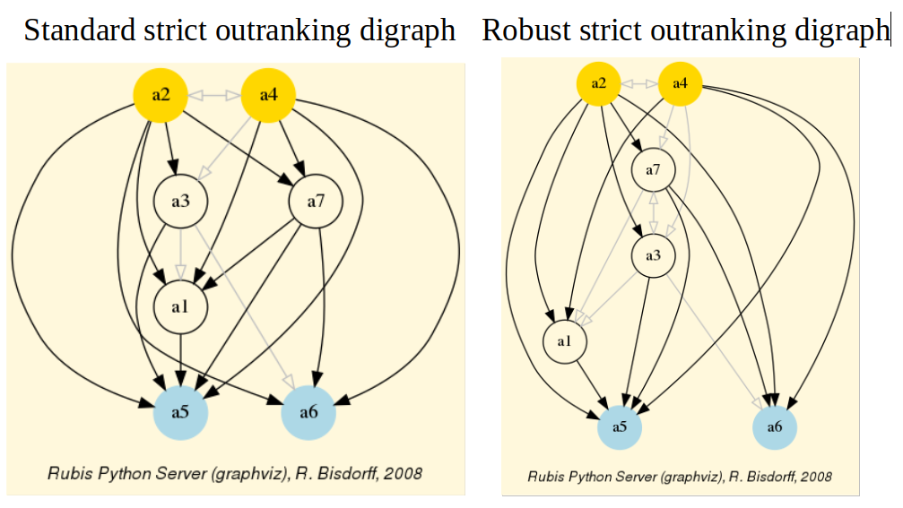
Fig. 85 Standard versus robust strict outranking digraphs oriented by their initial and terminal prekernels¶
The robust version drops two strict outranking situations: between a4 and a7 and between a7 and a1. The remaining 14 strict outranking (resp. outranked) situations are now all verified at a stability level of +2 and more (resp. -2 and less). They are, hence, only depending on potential significance weights that must respect the given significance preorder (see Listing 80).
To appreciate the apparent orientation of the standard and robust strict outranking digraphs shown in Fig. 85, let us have a final heat map view on the underlying performance tableau ordered by the NetFlows ranking rule.
>>> t.showHTMLPerformanceHeatmap(Correlations=True,rankingRule='NetFlows')
{kind=link}
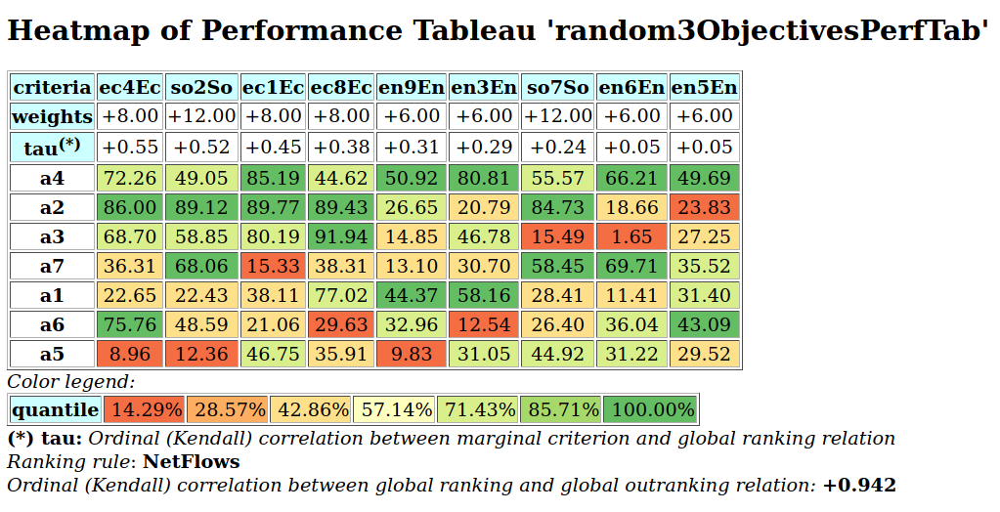
Fig. 86 Heat map of the random 3 objectives performance tableau ordered by the NetFlows ranking rule¶
As the inital prekernel is here validated at stability level +2, recommending alternatives a4, as well as a2, as potential best choices, appears well justified. Alternative a4 represents indeed an overall best compromise choice between all decision objectives, whereas alternative a2 gives an unanimous best choice with respect to two out of three decision objectives. Up to the decision maker to make his final choice.
For concluding, let us mention that it is precisely again our bipolar-valued logical characteristic framework that provides us here with a first order distributional dominance test for effectively qualifying the stability level 2 robustness of an outranking digraph when facing performance tableaux with criteria of only ordinal-valued significances. A real world application of our stability analysis with such a kind of performance tableau may be consulted in [BIS-2015p].
On unopposed outrankings with multiple decision objectives¶
When facing a performance tableau involving multiple decision objectives, the robustness level +/-3, introduced in the previous Section, may lead to distinguishing what we call unopposed outranking situations, like the one shown between alternative p4 and p1 (
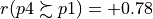
, see Listing 82 Line11), namely preferential situations that are more or less validated or invalidated by all the decision objectives.Characterising unopposed multiobjective outranking situations¶
Formally, we say that decision alternative x outranks decision alternative y unopposed when
x positively outranks y on one or more decision objective without x being positively outranked by y on any decision objective.
Dually, we say that decision alternative x does not outrank decision alternative y unopposed when
x is positively outranked by y on one or more decision objective without x outranking y on any decision objective.
Let us reconsider, for instance, the previous performance tableau with three decision objectives (see Listing 79):
1 2 3 4 5 6 7 8 9 10 11 12 13 14 15 16 17 18 19 20 | >>> from randomPerfTabs import Random3ObjectivesPerformanceTableau
>>> t = Random3ObjectivesPerformanceTableau(numberOfActions=7,\
numberOfCriteria=9,seed=102)
>>> t.showObjectives()
*------ show objectives -------"
Eco: Economical aspect
ec1 criterion of objective Eco 8
ec4 criterion of objective Eco 8
ec8 criterion of objective Eco 8
Total weight: 24.00 (3 criteria)
Soc: Societal aspect
so2 criterion of objective Soc 12
so7 criterion of objective Soc 12
Total weight: 24.00 (2 criteria)
Env: Environmental aspect
en3 criterion of objective Env 6
en5 criterion of objective Env 6
en6 criterion of objective Env 6
en9 criterion of objective Env 6
Total weight: 24.00 (4 criteria)
|
We notice in this example three decision objectives of equal importance (see Listing 89). What will be the outranking situations that are positively (resp. negatively) validated for each one of the decision objectives taken individually ?
We may obtain such unopposed multiobjective outranking situations by operating an epistemic o-average fusion (see the digraphsTools.symmetricAverage method) of the marginal outranking digraphs restricted to the coalition of criteria supporting each one of the decision objectives (see Listing 90 below).
1 2 3 4 5 6 7 8 9 10 11 12 13 14 15 16 17 18 19 20 21 | >>> from outrankingDigraphs import BipolarOutrankingDigraph
>>> geco = BipolarOutrankingDigraph(t,objectivesSubset=['Eco'])
>>> gsoc = BipolarOutrankingDigraph(t,objectivesSubset=['Soc'])
>>> genv = BipolarOutrankingDigraph(t,objectivesSubset=['Env'])
>>> from digraphs import FusionLDigraph
>>> objectiveWeights = [t.objectives[obj]['weight']\
for obj in t.objectives]
>>> uopg = FusionLDigraph([geco,gsoc,genv],operator='o-average',\
weights=objectiveWeights)
>>> uopg.showRelationTable(ReflexiveTerms=False)
* ---- Relation Table -----
r | 'p1' 'p2' 'p3' 'p4' 'p5' 'p6' 'p7'
-----|------------------------------------------------------------
'p1' | - +0.00 +0.00 -0.69 +0.39 +0.11 +0.00
'p2' | +0.00 - +0.83 +0.00 +0.00 +0.00 +0.00
'p3' | +0.00 -0.33 - +0.00 +0.50 +0.00 +0.00
'p4' | +0.78 +0.00 +0.61 - +1.00 +1.00 +0.67
'p5' | -0.11 +0.00 +0.00 -0.89 - +0.11 +0.00
'p6' | +0.00 +0.00 +0.00 -0.44 +0.17 - +0.00
'p7' | +0.00 +0.00 +0.00 +0.00 +0.78 +0.42 -
Valuation domain: [-1.000; 1.000]
|
Positive (resp. negative)
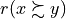
characteristic values, like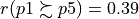
(see Listing 90 Line 14), show hence only outranking situations being validated (resp. invalidated) by one or more decision objectives without being invalidated (resp. validated) by any other decision objective.For easily computing this kind of unopposed multiobjective outranking digraphs, the outrankingDigraphs module conveniently provides a corresponding outrankingDigraphs.UnOpposedBipolarOutrankingDigraph constructor.
1 2 3 4 5 6 7 8 9 10 11 12 13 14 15 16 17 18 19 20 | >>> from outrankingDigraphs import\
UnOpposedBipolarOutrankingDigraph
>>> uopg = UnOpposedBipolarOutrankingDigraph(t)
>>> uopg
*------- Object instance description ------*
Instance class : UnOpposedBipolarOutrankingDigraph
Instance name : unopposed_outrankings
# Actions : 7
# Criteria : 9
Size : 13
Oppositeness (%) : 43.48
Determinateness (%) : 61.71
Valuation domain : [-1.00;1.00]
Attributes : ['name', 'actions', 'valuationdomain', 'objectives',
'criteria', 'methodData', 'evaluation', 'order',
'runTimes', 'relation', 'marginalRelationsRelations',
'gamma', 'notGamma']
>>> uopg.computeOppositeness(InPercents=True)
{'standardSize': 23, 'unopposedSize': 13,
'oppositeness': 43.47826086956522}
|
The resulting unopposed outranking digraph keeps in fact 13 (see Listing 91 Line 18-20) out of the 23 positively validated standard outranking situations, leading to a degree of oppositeness -preferential disagreement between decision objectives- of
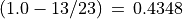
.We may now, for instance, verify the unopposed status of the outranking situation observed between alternatives p1 and p5.
1 2 3 4 5 6 7 8 9 10 11 12 13 14 | >>> uopg.showPairwiseComparison('p1','p5')
*------------ pairwise comparison ----*
Comparing actions : (p1, p5)
crit. wght. g(x) g(y) diff | ind pref r() |
ec1 8.00 38.11 46.75 -8.64 | 5.00 10.00 +0.00 |
ec4 8.00 22.65 8.96 +13.69 | 5.00 10.00 +8.00 |
ec8 8.00 77.02 35.91 +41.11 | 5.00 10.00 +8.00 |
en3 6.00 58.16 31.05 +27.11 | 5.00 10.00 +6.00 |
en5 6.00 31.40 29.52 +1.88 | 5.00 10.00 +6.00 |
en6 6.00 11.41 31.22 -19.81 | 5.00 10.00 -6.00 |
en9 6.00 44.37 9.83 +34.54 | 5.00 10.00 +6.00 |
so2 12.00 22.43 12.36 +10.07 | 5.00 10.00 +12.00 |
so7 12.00 28.41 44.92 -16.51 | 5.00 10.00 -12.00 |
Valuation in range: -72.00 to +72.00; global concordance: +28.00
|
In Listing 92 we see that alternative p1 does indeed positively outrank alternative p5 from the economic perspective (
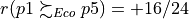
) as well as from the environmental perspective (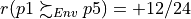
). Whereas, from the societal perspective, both alternatives appear incomparable (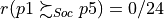
). When fixed proportional criteria significances per objective are given, these outranking situations appear hence stable with respect to all possible importance weights we could allocate to the decision objectives.Unopposed best multiobjective choice recommendations¶
Let us compute now best choice recommendations from such an unopposed multiobjective outranking digraph.
1 2 3 4 5 6 7 8 9 10 11 12 13 14 15 16 17 18 | >>> uopg.showBestChoiceRecommendation()
Best choice recommendation(s) (BCR)
(in decreasing order of determinateness)
Credibility domain: [-1.00,1.00]
=== >> potential best choice(s)
choice : ['p2', 'p4', 'p7']
independence : 0.00
dominance : 0.33
absorbency : 0.00
covering (%) : 33.33
determinateness (%) : 50.00
=== >> potential worst choice(s)
choice : ['p3', 'p5', 'p6', 'p7']
independence : 0.00
dominance : -0.61
absorbency : 0.11
covered (%) : 33.33
determinateness (%) : 50.00
|
Our previous robust best choice recommendation (p2 and p4, see Fig. 85) remains, in this example here, stable. We recover indeed the best choice recommendation [‘p2’, ‘p4’, ‘p7’] (see Listing 93 Line 6). Yet, notice that decision alternative p7 appears to be at the same time a potential best as well as a potential worst choice recommendation (see Line 13).
We may visualize this unopposed robustness result in Fig. 87 below.
>>> (~(-uopg)).exportGraphViz(fileName = 'unopDigraph',\
bestChoice = ['p2', 'p4'],\
worstChoice = ['p3', 'p5', 'p6'])
*---- exporting a dot file for GraphViz tools ---------*
Exporting to unopDigraph.dot
dot -Grankdir=BT -Tpng unopDigraph.dot -o unopDigraph.png
{kind=link}
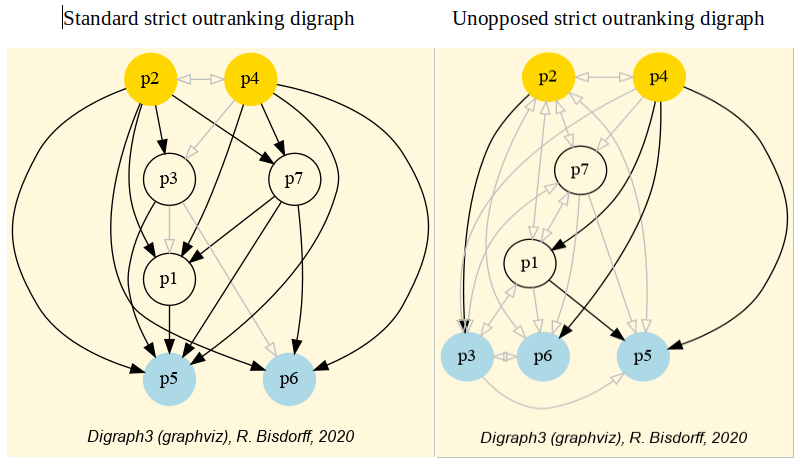
Fig. 87 Standard versus unopposed strict outranking digraphs oriented by best and worst choice recommendations¶
Two-stage elections with multipartisan primary selection¶
Let us finally remark that in a social choice context, where decision objectives would match different political parties, our previous unopposed best choice recommendations represent in fact robust multipartisan consensus choices.
Converting voting profiles into performance tableaux¶
We shall illustrate this point with a voting profile we discuss in the tutorial on generating random linear voting profiles.
1 2 3 4 5 6 7 8 9 10 11 12 13 14 15 16 17 18 19 20 21 22 23 24 25 26 27 28 29 30 31 32 33 34 35 36 37 38 39 40 41 | >>> from votingProfiles import RandomLinearVotingProfile
>>> lvp = RandomLinearVotingProfile(numberOfCandidates=15,
numberOfVoters=1000,
WithPolls=True,
partyRepartition=0.5,
other=0.1,
seed=0.9189670954954139)
>>> lvp
*------- VotingProfile instance description ------*
Instance class : RandomLinearVotingProfile
Instance name : randLinearProfile
# Candidates : 15
# Voters : 1000
Attributes : ['name', 'seed', 'candidates',
'voters', 'WithPolls', 'RandomWeights',
'sumWeights', 'poll1', 'poll2',
'other', partyRepartition,
'linearBallot', 'ballot']
>>> lvp.showRandomPolls()
Random repartition of voters
Party_1 supporters : 460 (46.0%)
Party_2 supporters : 436 (43.6%)
Other voters : 104 (10.4%)
*---------------- random polls ---------------
Party_1(46.0%) | Party_2(43.6%)| expected
-----------------------------------------------
a06 : 19.91% | a11 : 22.94% | a06 : 15.00%
a07 : 14.27% | a08 : 15.65% | a11 : 13.08%
a03 : 10.02% | a04 : 15.07% | a08 : 09.01%
a13 : 08.39% | a06 : 13.40% | a07 : 08.79%
a15 : 08.39% | a03 : 06.49% | a03 : 07.44%
a11 : 06.70% | a09 : 05.63% | a04 : 07.11%
a01 : 06.17% | a07 : 05.10% | a01 : 05.06%
a12 : 04.81% | a01 : 05.09% | a13 : 05.04%
a08 : 04.75% | a12 : 03.43% | a15 : 04.23%
a10 : 04.66% | a13 : 02.71% | a12 : 03.71%
a14 : 04.42% | a14 : 02.70% | a14 : 03.21%
a05 : 04.01% | a15 : 00.86% | a09 : 03.10%
a09 : 01.40% | a10 : 00.44% | a10 : 02.34%
a04 : 01.18% | a05 : 00.29% | a05 : 01.97%
a02 : 00.90% | a02 : 00.21% | a02 : 00.51%
|
In this example (see Listing 17 Lines 18-), we obtained 460 Party_1 supporters (46%), 436 Party_2 supporters (43.6%) and 104 other voters (10.4%). Favorite candidates of Party_1 supporters, with more than 10%, appeared to be a06 (19.91%), a07 (14.27%) and a03 (10.02%). Whereas for Party_2 supporters, favorite candidates appeared to be a11 (22.94%), followed by a08 (15.65%), a04 (15.07%) and a06 (13.4%).
We may convert this linear voting profile into a PerformanceTableau object where each party corresponds to a decision objective.
1 2 3 4 5 6 7 8 9 10 11 12 13 14 15 16 17 18 19 20 21 | >>> lvp.save2PerfTab('votingPerfTab')
>>> from perfTabs import PerformanceTableau
>>> vpt = PerformanceTableau('votingPerfTab')
>>> vpt
*------- PerformanceTableau instance description ------*
Instance class : PerformanceTableau
Instance name : votingPerfTab
# Actions : 15
# Objectives : 3
# Criteria : 1000
Attributes : ['name', 'actions', 'objectives',
'criteria', 'weightPreorder', 'evaluation']
>>> vpt.objectives
OrderedDict([
('party0', {'name': 'other', 'weight': Decimal('104'),
'criteria': ['v0003', 'v0008', 'v0011', ... ']}),
('party1', {'name': 'party 1', 'weight': Decimal('460'),
'criteria': ['v0002', 'v0006', 'v0007', ...]}),
('party2', {'name': 'party 2', 'weight': Decimal('436'),
'criteria': ['v0001', 'v0004', 'v0005', ... ]})
])
|
In Listing 95 we first store the linear voting in a perfTabs.PerformanceTableau format (see Line 1). In Line 3, we reload this performance tableau data. The three parties of the linear voting profile represent three decision objectives and the voters are distributed as performance criteria according to the party they support.
Multipartisan primary selection of eligible candidates¶
In order to make now a primary multipartisan selection of potential election winners, we compute the corresponding unopposed multiobjective outranking digraph.
1 2 3 4 5 6 7 8 9 10 11 12 13 14 15 16 17 18 | >>> from outrankingDigraphs import \
UnOpposedBipolarOutrankingDigraph
>>> uog = UnOpposedBipolarOutrankingDigraph(vpt)
>>> uog
*------- Object instance description ------*
Instance class : UnOpposedBipolarOutrankingDigraph
Instance name : unopposed_outrankings
# Actions : 15
# Criteria : 1000
Size : 34
Oppositeness (%) : 67.31
Determinateness (%) : 57.61
Valuation domain : [-1.00;1.00]
Attributes : ['name', 'actions', 'valuationdomain',
'objectives', 'criteria', 'methodData',
'evaluation', 'order', 'runTimes', '
relation', 'marginalRelationsRelations',
'gamma', 'notGamma']
|
From the potential 105 pairwise outranking situations, we keep 34 positively validated outranking situation, leading to a degree of oppositeness between political parties of 67.31%.
We may visualize the corresponding bipolar-valued relation table by orienting the list of candidates with the help of the initial and the terminal prekernels.
1 2 3 4 5 6 7 8 9 10 11 12 13 14 15 16 17 18 19 | >>> uog.showPrekernels()
*--- Computing preKernels ---*
Dominant preKernels :
['a11', 'a06', 'a13', 'a15']
independence : 0.0
dominance : 0.18
absorbency : -0.66
covering : 0.43
Absorbent preKernels :
['a02', 'a04', 'a14', 'a03']
independence : 0.0
dominance : 0.0
absorbency : 0.37
covered : 0.46
>>> orientedCandidatesList = ['a06','a11','a13','a15',\
'a01','a05','a07','a08','a09','a10','a12',\
'a02','a03','a04','a14']
>>> uog.showHTMLRelationTable(\
tableTitle='Unopposed three-partisan outrankings')
|
{kind=link}
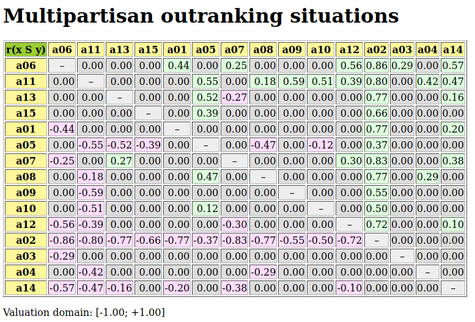
Fig. 88 Relation table of multipartisan outranking digraph¶
In Fig. 88, we may notice that the dominating outranking prekernel [‘a06’, ‘a11’, ‘a13’, ‘a15’] gathers in fact a multipartisan selection of potential election winners. It is worthwhile noticing that in Fig. 88 the majority margins obtained from a linear voting profile do verify the zero-sum rule (
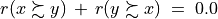
). To each positive outranking situation corresponds indeed an equivalent negative converse situation and the resulting outranking and strict outranking digraphs are the same.Secondary election winner determination¶
When restricting now, in a secondary election stage, the set of eligible candidates to this dominating prekernel, we may compute the actual best social choice.
1 2 3 4 5 6 7 8 9 10 11 12 13 14 15 16 | >>> from outrankingDigraphs import BipolarOutrankingDigraph
>>> g2 = BipolarOutrankingDigraph(vpt,\
actionsSubset=['a06','a11','a13','a15'])
>>> g2.showRelationTable(ReflexiveTerms=False)
* ---- Relation Table -----
r | 'a06' 'a11' 'a13' 'a15'
.------|-------------------------------
'a06' | - +0.10 +0.48 +0.52
'a11' | -0.10 - +0.27 +0.29
'a13' | -0.48 -0.27 - +0.19
'a15' | -0.52 -0.29 -0.19 -
Valuation domain: [-1.000; 1.000]
>>> g2.computeCondorcetWinners()
['a06']
>>> g2.computeCopelandRanking()
['a06', 'a11', 'a13', 'a15']
|
Candidate a06 appears clearly to be the winner of this election. Notice by the way that the restricted pairwise outranking relation shown in Listing 98 represents a linear ordering of the preselected candidates.
We may eventually check the quality of this best choice by noticing that candidate a06 represents indeed the simple majority winner, the instant-run-off winner, the Borda, as well as the Condorcet winner of the initially given linear voting profile lvp (see Listing 94).
1 2 3 4 5 6 7 8 9 10 | >>> lvp.computeSimpleMajorityWinner()
['a06']
>>> lvp.computeInstantRunoffWinner()
['a06']
>>> lvp.computeBordaWinners()
['a06']
>>> from votingProfiles import CondorcetDigraph
>>> cd = CondorcetDigraph(lvp)
>>> cd.condorcetWinners()
['a06']
|
In our example voting profile here, the multipartisan primary selection stage appears quite effective in reducing the number of eligible candidates to four out of a set of 15 candidates without btw rejecting the actual winning candidate.
Multipartisan preferences in divisive politics¶
However, in a very divisive two major party system, like in the US, where preferences of the supporters of one party appear to be very opposite to the preferences of the supporters of the other major party, the multipartisan outranking digraph will become nearly indeterminate.
In Listing 100 below we generate such a divisive kind of linear voting profile with the help of the DivisivePolitics flag 5 (see Lines 4 and 13-19). When now converting the voting profile into a performance tableau (Lines 20-21), we may compute the corresponding unopposed outranking digraph.
1 2 3 4 5 6 7 8 9 10 11 12 13 14 15 16 17 18 19 20 21 22 23 24 25 26 27 28 29 30 31 32 | >>> lvp = RandomLinearVotingProfile(\
numberOfCandidates=7,numberOfVoters=500,\
WithPolls=True, partyRepartition=0.4,other=0.2,\
DivisivePolitics=True, seed=1)
>>> lvp.showRandomPolls()
Random repartition of voters
Party_1 supporters : 240 (48.00%)
Party_2 supporters : 160 (32.00%)
Other voters : 100 (20.00%)
*---------------- random polls ---------------
Party_1(48.0%) | Party_2(32.0%)| expected
-----------------------------------------------
a2 : 30.84% | a1 : 30.84% | a2 : 15.56%
a3 : 23.67% | a4 : 23.67% | a3 : 12.91%
a7 : 17.29% | a6 : 17.29% | a7 : 11.43%
a5 : 11.22% | a5 : 11.22% | a1 : 11.00%
a6 : 09.79% | a7 : 09.79% | a6 : 10.23%
a4 : 04.83% | a3 : 04.83% | a4 : 09.89%
a1 : 02.37% | a2 : 02.37% | a5 : 08.98%
>>> lvp.save2PerfTab('divisiveExample')
>>> dvp = PerformanceTableau('divisiveExample')
>>> uodg = UnOpposedBipolarOutrankingDigraph(dvp)
>>> uodg
*------- Object instance description ------*
Instance class : UnOpposedBipolarOutrankingDigraph
Instance name : unopposed_outrankings
# Actions : 7
# Criteria : 500
Size : 0
Oppositeness (%) : 100.00
Determinateness (%) : 50.00
Valuation domain : [-1.00;1.00]
|
With an oppositeness degree of 100.0% (see Listing 100 Line 30), the preferential disagreement between the political parties is complete, and the unopposed outranking digraph uodg becomes completely indeterminate as shown in the relation table below.
>>> uodg.showRelationTable(ReflexiveTerms=False)
* ---- Relation Table -----
r | 'a1' 'a2' 'a3' 'a4' 'a5' 'a6' 'a7'
-----|-------------------------------------------------
'a1' | - +0.00 +0.00 +0.00 +0.00 +0.00 +0.00
'a2' | +0.00 - +0.00 +0.00 +0.00 +0.00 +0.00
'a3' | +0.00 +0.00 - +0.00 +0.00 +0.00 +0.00
'a4' | +0.00 +0.00 +0.00 - +0.00 +0.00 +0.00
'a5' | +0.00 +0.00 +0.00 +0.00 - +0.00 +0.00
'a6' | +0.00 +0.00 +0.00 +0.00 +0.00 - +0.00
'a7' | +0.00 +0.00 +0.00 +0.00 +0.00 +0.00 -
Valuation domain: [-1.000; 1.000]
As a consequence, a multipartisan primary selection, computed with a uodg.showBestChoiceRecommendation() method, will keep the complete initial set of eligible candidates and, hence, becomes ineffective (see Listing 101 Line 6).
1 2 3 4 5 6 7 8 9 10 11 12 | >>> uodg.showBestChoiceRecommendation()
Rubis best choice recommendation(s) (BCR)
(in decreasing order of determinateness)
Credibility domain: [-1.00,1.00]
=== >> ambiguous choice(s)
choice : ['a1','a2','a3','a4','a5','a6','a7']
independence : 0.00
dominance : 1.00
absorbency : 1.00
covered (%) : 100.00
determinateness (%) : 50.00
- most credible action(s) = { }
|
With such king of divisive voting profile, there may not always exist an obvious winner. In Listing 102 below, we see, for instance, that the simple majority winnner is a2 (Line 2), whereas the instant-run-off winner is a6 (Line 4).
1 2 3 4 5 6 7 8 9 10 11 12 13 14 15 16 17 18 19 20 21 22 23 24 | >>> lvp.computeSimpleMajorityWinner()
['a2']
>>> lvp.computeInstantRunoffWinner()
['a6']
>>> from votingProfiles import CondorcetDigraph
>>> cg = CondorcetDigraph(lvp)
>>> cg.showRelationTable(ReflexiveTerms=False)
* ---- Relation Table -----
S | 'a1' 'a2' 'a3' 'a4' 'a5' 'a6' 'a7'
------|------------------------------------
'a1' | - -68 -90 -46 -68 -88 -84
'a2' | +68 - -32 +80 +46 -6 -24
'a3' | +90 +32 - +58 +46 +4 +8
'a4' | +4 -80 -58 - -16 -68 -72
'a5' | +68 -46 -46 +16 - -26 -64
'a6' | +88 +6 -4 +68 "26 - -2
'a7' | +84 +24 -8 +72 "64 "2 -
Valuation domain: [-500;+500]
>>> cg.computeCondorcetWinners()
['a3']
>>> cp.computeBordaWinners()
['a3','a7']
>>> cg.computeCopelandRanking()
['a3', 'a7', 'a6', 'a2', 'a5', 'a4', 'a1']
|
But in our example here, we are lucky. When constructing with the pairwise majority margins the corresponding Condorcet digraph (Lines 5-6), a Condorcet winner, namely a3 becomes apparent (Lines 13,19-20), which is also one of the two Borda winners. More interesting even is to notice that the apparent Condorcet digraph models in fact a linear ranking [‘a3’, ‘a7’, ‘a6’, ‘a2’, ‘a5’, ‘a4’, ‘a1’] of all the eligible candidates, as shown with a Copeland ranking rule (Lines 23-24).
We may eventually visualize in Listing 103 this linear ranking with a graphviz drawing where we drop all transitive arcs (Line 1) and orient the drawing with Condorcet winner a3 and looser a1 (Lines 2).
1 2 3 4 5 | >>> cg.closeTransitive(Reverse=True)
>>> cg.exportGraphViz('divGraph',bestChoice=['a3'],worstChoice=['a1'])
*---- exporting a dot file for GraphViz tools ---------*
Exporting to divGraph.dot
dot -Grankdir=BT -Tpng divGraph.dot -o divGraph.png
|
{kind=link}
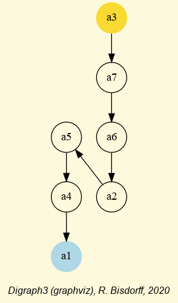
Fig. 89 Linear ordering of the eligible candidates¶
Back to Content Table
Bibliography¶
- BIS-2015p
Bisdorff R. (2015). “The EURO 2004 Best Poster Award: Choosing the Best Poster in a Scientific Conference”. Chapter 5 in R. Bisdorff, L. Dias, P. Meyer, V. Mousseau, and M. Pirlot (Eds.), Evaluation and Decision Models with Multiple Criteria: Case Studies. Springer-Verlag Berlin Heidelberg, International Handbooks on Information Systems, DOI 10.1007/978-3-662-46816-6_1, pp. 117-166 (downloadable PDF file 754.7 kB).
- BIS-2014p
Bisdorff R., Meyer P. and Veneziano Th. (2014). “Elicitation of criteria weights maximising the stability of pairwise outranking statements”. Journal of Multi-Criteria Decision Analysis (Wiley) 21: 113-124 (downloadable preprint PDF file 431.4 Kb).
- BIS-2013p
Bisdorff R. (2013) “On Polarizing Outranking Relations with Large Performance Differences” Journal of Multi-Criteria Decision Analysis (Wiley) 20:3-12 (downloadable preprint PDF file 403.5 Kb).
- BIS-2012p(1,2)
Bisdorff R. (2012). “On measuring and testing the ordinal correlation between bipolar outranking relations”. In Proceedings of DA2PL’2012 From Multiple Criteria Decision Aid to Preference Learning, University of Mons 91-100. (downloadable preliminary version PDF file 408.5 kB ).
- BIS-2006_1p
Bisdorff R., Pirlot M. and Roubens M. (2006). “Choices and kernels from bipolar valued digraphs”. European Journal of Operational Research, 175 (2006) 155-170. (Online) Electronic version: DOI:10.1016/j.ejor.2005.05.004 (downloadable preliminary version PDF file 257.3Kb).
- BIS-2006_2p
Bisdorff R. (2006). “On enumerating the kernels in a bipolar-valued digraph”. Annales du Lamsade 6, Octobre 2006, pp. 1 - 38. Université Paris-Dauphine. ISSN 1762-455X (downloadable version PDF file 532.2 Kb).
- BIS-2004_1p
Bisdorff R. (2004). “Concordant Outranking with multiple criteria of ordinal significance”. 4OR, Quarterly Journal of the Belgian, French and Italian Operations Research Societies, Springer-Verlag, Issue: Volume 2, Number 4, December 2004, Pages: 293 - 308. [ISSN: 1619-4500 (Paper) 1614-2411 (Online)] Electronic version: DOI: 10.1007/s10288-004-0053-7 (downloadable preliminary version PDF file 137.1Kb)
- BIS-2004_2p(1,2)
Bisdorff R. (2004). Preference aggregation with multiple criteria of ordinal significance. In: D. Bouyssou, M. Janowitz, F. Roberts, and A. Tsouki´s (eds.), Annales du LAMSADE, 3, Octobre 2004, Université Paris-Dauphine, pp. 25-44 [ISSN 1762-455X] (downloadable PDF file 167.6Kb).
- SCH-1985p
Schmidt G. and Ströhlein Th. (1985), “On kernels of graphs and solutions of games: a synopsis based on relations and fixpoints”. SIAM, J. Algebraic Discrete Methods, 6, 1985, 54–65.
- BER-1958p
Berge C. (2001), The theory of graphs. Dover Publications Inc. 2001. First published in English by Methuen & Co Ltd., London 1962. Translated from a French edition by Dunod, Paris 1958.
- KEN-1938p
Kendall M.G. (1938), “A New Measure of Rank Correlation”. Biometrica 30:81–93
Documents¶
Footnotes¶
- 1
Graffiti, Edition Revue Luxembourg, September 2007, p. 30. You may find the data file graffiti07.py (perfTabs.PerformanceTableau Format) in the examples directory of the Digraph3 ressources.
- 2
The 3D PCA plot method requires a running R statistics software (https://www.r-project.org/) installation and the Calmat matrix calculator (see the calmat directory in the Digraph3 ressources)
- 3
A kernel in a digraph g is a clique in the dual digraph -g.
- 4
The Gnu Regression, Econometrics and Time-series Library http://gretl.sourceforge.net/ .
- 5
The
votingProfiles.RandomLinearVotingProfileconstructor provides a DivisivePolitics flag (False by default) for generating random linear voting profiles based on a divisive polls strucure.